生成时间：2026-11-13T16:30:53+08:00
今日保留论文数：20
内容构成：今日新文 20 篇；补充推荐 0 篇；经典旧文精读 0 篇
阅读分层：重点精读 5 篇；相关简报 15 篇。精读依据科学贡献筛选，简报保留方法、结论及局限。
数据源警告
- 本次有 3 个数据源访问异常；完整错误已保留在运行日志中，日报只显示摘要。
- 其他来源：3 个异常。
- 主要错误类型：其他 3 次。
高能天体物理重点
1. Detection of 2 MeV spectral bump and ~40 MeV emission line from GRB 221009A
- 来源：arXiv / astro-ph.HE
- 链接：https://arxiv.org/abs/2611.15119
- 作者：Zhi-Qiang Ding, Zhenxia Zhang, Yanqiu Zhang, Rui-Ze Shi, Xinqiao Li, Zhuo Li, Zhenghua An, Shaolin Xiong
- 公告 / 来源日期：2026-11-13
- 阅读层级：重点精读
- 评分：novelty 9/10，importance 8/10，relevance 10/10，final 10.00/10
- 推荐理由：无饱和卫星与交叉标定分时量测GRB 221009A约2 MeV隆起及高能线演化；核心机制仍待甄别。
中文题目：BOAT 的 MeV 谱有两处额外结构：HEPP 补测 GRB 221009A 主峰隆起与约 40 MeV 发射线
做了什么：作者把地震电磁监测卫星 CSES-01 上原为测带电粒子设计的 HEPP-H 作为高计数率伽马探测器使用。伽马光子在卫星材料里产生次级电子和正电子，作者通过整星 Geant4 模拟、在轨增益校准和分时间段的堆积/死时间模拟，把这些沉积信号转换成 2–255 MeV 的前向响应。联合 GECAM-C，并在可用时加入 Fermi/GBM，分别分析主峰和衰减段。
225–235 s 主峰的六个时间箱里，单 Band 谱留下结构性残差，加黑体或截止幂律均改善拟合。衰减段 242–251 s 的高斯中心为 $39.4^{+7.4}_{-3.6}$ MeV，局部模拟显著性约 $4.0\sigma$，246–256 s 窗内约 37 MeV 的结构超过 $4.5\sigma$。时间窗重叠，显著性不能相加。结果支持主峰存在第二个谱成分，并把已知漂移发射线往前追到更高能，两个成分的物理起源仍有多解。
为什么重要：BOAT 的主峰让常用探测器进入严重饱和或复杂堆积状态。若只剔除高流量时段，谱线演化和主辐射功率正好会缺失最关键的观测点。作者利用 HEPP-H 不同的读出方式恢复 MeV 能段，再用未饱和的 GECAM-C 锚定连续谱。两个相邻但物理性质不同的结构分别出现在主峰和衰减期，提供了检验喷流辐射分区的时间顺序。
理论 / 观测 / 仪器方法价值：观测方法的价值是把次级粒子探测器当作具有率依赖响应的伽马谱仪，联合标定材料响应、读出和轨道背景。谱学上可用同一事件分别检验宽曲率、窄线和额外高能连续谱。理论上，线能漂移与线通量的时间演化可分别约束几何或动力学，数据对湮灭、逆康普顿等具体成因的区分仍有限。
为什么应该关注：对高能瞬变探测，值得复用的顺序是先查各仪器时段的饱和与计数率上限，再用率依赖响应做计数空间联合拟合，最后以与真实搜索相同的模拟检验谱结构。跨仪器一致的连续谱和分时段残差比一条去卷积曲线更便于定位系统误差。主峰隆起的谱形退化和约 40 MeV 线的重叠时间窗，也是将来做独立复核时需要保留的边界。
展开详细解读：文章讲解、背景、理论、重点章节、图表与相关工作
文章详细讲解
观测问题。 研究关注 GRB 221009A 提示辐射中强而短的主峰及紧随其后的衰减。主峰首先要恢复跨 MeV 连续谱，才能检验较宽的额外隆起。衰减期则要判断残差是否局限于随时间移动的窄能带，而非用连续谱变化就能消去。
探测链。 HEPP-H 记录的是入射光子在卫星、探测器周边材料内产生的次级带电粒子。作者把入射方向和材料纳入 Geant4，模拟约 $7\times10^8$ 个初级光子，约八成触发相关沉积归于次级电子和正电子。响应继续经过 ADC 增益、约 240 μs 主读出死时间与堆积过程。高能沉积和真实入射能量之间必须用矩阵映射。
连续谱和谱线。 GECAM-C 与 HEPP-H 联合覆盖主峰的低高两侧。Band 加黑体或截止幂律都可移除主要宽残差。衰减段用较宽连续谱加高斯搜索线，同时检查约 200 MeV 以上的附加硬谱与 LAT 的相容性。Fermi/GBM BGO 只在能通过读出和跨标定检查的衰减窗口加入。
推断范围。 黑体模型对应 MeV 量级色温，截止幂律也能描述同一结构，热解释依赖模型。较早线能与已报道晚期漂移律相容，线通量却低于晚期外推，提示通量先上升再衰减。曲率效应可解释一种能量漂移途径，但光子场、磁场结构、局地发射过程还需用独立观测区分。
关键结果是怎么做出来的
校准验证。 HEPP-H 发射前没有面向该任务的伽马标定，作者用在轨最低电离粒子沉积峰监测增益，发现 2018 年初至 2022 年 10 月下降约 10%–17%。主峰联合拟合给出 HEPP-H 相对 GECAM-C 的交叉归一化约 $1.05\pm0.07$。这支持两仪器在共同能段的通量尺度相容，逐能道和极高率响应的误差还取决于其各自模拟。
主峰的谱形。 225–235 s 分六段拟合。作者报告加黑体相对单 Band 的 AIC 改善约 82–783。228–230 s 的黑体 $kT=1.803\pm0.051$ MeV，表中六段约 1.0–2.8 MeV。$kT$ 是拟合色温参数，和去卷积谱图的隆起峰能采用不同定义。截止幂律在若干窗口同样有效甚至 AIC 更低，因而拟合首要证据是连续谱形需要额外自由度。
能量规模。 主峰 230–231 s 的峰值各向同性等效光度约 $1.1\times10^{54}$ erg/s，225–235 s 内等效能量约 $4.9\times10^{54}$ erg。作者在源静止系 1 keV–10 MeV 积分。这里的光度以各向同性换算，若要得到喷流实际辐射能，还需要喷流立体角。
较早的发射线。 242–251 s 的线宽 $\sigma=3.1\pm2.3$ MeV，能量通量 $1.11^{+1.59}_{-0.45}\times10^{-5}$ erg cm$^{-2}$ s$^{-1}$。该窗 $\Delta C=44.06$，约二十万次模拟给出 $4.0\sigma$。237–246 s 约 $2.6\sigma$，246–256 s 的改进 $\Delta C=190.22$ 并超过 $4.5\sigma$。均对应论文所用窗口与零模型，三个窗共享事件。
更宽时窗的检验。 附录 C.5 另将 237–256 s 合并，得到 $\Delta C=91.30$。作者用约 $2.3\times10^5$ 次单 Band 模拟，给出所称的全局显著性 $>4.4\sigma$（$P<4.3\times10^{-6}$）。这是对整个合并窗的单独检验，仍以给定的谱模型和窗口为条件。
时间演化。 将早期点与 Zhang 等的后期点同画，能量大体沿既有 $E_{\rm line}\propto(t-t_0)^{-1.05}$ 趋势，参考时刻 $t_0=T_{\rm ref}+226$ s。由于重叠取窗，新点没有被当成独立点去重新拟合此律。256–273 s 按外推中心、固定相对线宽估计通量上限，对不同中心或线宽的结构灵敏度另需计算。
展开背景、理论、公式、模型和章节导读
背景知识
GRB 221009A 特别亮，时间积分谱会混合快速演化的主峰、衰减和较硬高能成分。即使每一瞬间只有一种平滑谱形，未经分时的叠加也可能形成隆起，因此时间选择是检验独立成分的重要条件。
Band 函数用两个平滑连接的幂律描述宽带瞬变谱，可灵活拟合多数 GRB 形状。相邻能道一同偏离 Band 时，首先需要区分校准、响应、堆积与真正的附加连续谱，单看一条已展开谱不足以判定机制。
HEPP 原本关注低轨辐射带中的带电粒子，背景会随轨道环境变化。作者在相近的轨道和磁壳区间挑选六次暴发前的平静通过来估计背景。低流量背景测量、主峰高率响应和晚期谱线检验在统计上承担不同作用。
已有观测发现该 GRB 的 MeV 窄结构在衰减中向低能移动。高纬度曲率、正负电子湮灭和逆康普顿重处理均可能参与类似观测，峰能、线宽、通量和相对连续谱的对比必须联合检查。
基础理论 / 方法脉络
光子入射后的电磁级联会在多个材料层产生电子和正电子，部分粒子进入探测器沉积能量。角度与材料改变条件概率 $R_{ij}$，因而同样的测量能道能接收不同初级能量。
死时间让触发计数小于真入射率。堆积又可把相近脉冲合并，改变谱形，校正光变率不足以校正能谱。作者借短死时间遥测计数器和完整读出仿真挑选响应模拟输入率。
Band 负责宽连续谱。黑体的低能上升、高能指数尾和截止幂律的自由指数都可增加局部曲率。当可区分的能区狭窄时，不同物理起源可能落在近似相同的计数谱上。
线型以高斯描述中心、宽度与通量，再通过响应折叠。由于无谱线时中心和宽度无从定义，通常不能直接用固定自由度的卡方分布换算显著性。作者用零模型模拟来标定实际检验统计量。
曲率模型中晚来的光子从更偏轴的壳面抵达，经历较低多普勒因子。线能可随到时下降，线通量还依赖角向辐射强度和相对论变换。能量的近反比漂移本身保留了多种微观线源解释。
公式与推导
从记录率恢复参考率。 原文式（1）使用非延长型死时间表达式。$n$ 是记录率，$N$ 是校正率，均以 s$^{-1}$ 计，$\tau$ 是秒，要求 $n\tau<1$。接近饱和值时小计数差会放大，谱形另需仿真。
在模拟中生成事件间隔。 原文式（2）–（5）用强度 $\lambda$ 的泊松到达过程生成等待时间。用均匀数 $u$ 抽样 $\Delta t$，随后送入读出流程，反复比较模拟率与短死时间遥测。$\lambda$ 是模拟输入率，并不自动等于源的物理光子通量。
在观测计数空间比较。 教学写法。$A$ 为入射每能量光子通量，$R_{ij}$ 包含有效面积和把真能量映射到第 $j$ 道的概率，$r_i$ 是第 $i$ 窗率，$T_i$ 是响应使用的时间尺度，$b_{ij}$ 为背景计数。率通过 $R$ 改变谱形。
给宽隆起两种描述。 对应原文式（7）、（9）的形状写法，略去各文内归一化常数。$E$、$E_0$、$E_c$、$kT$ 用同一能量单位，$A_{\rm Band}$ 是共享连续谱。比较时这些参数重新拟合。对光子数黑体乘 $E^2$ 才是 $\nu F_\nu$，其峰能约 $3.92kT$。
统计改进需要代价。 教学写法。$n_j$ 是各能道计数，$\mu_j$ 是模型计数，$k$ 为参数数目。$C$ 表示忽略模型无关常数的泊松偏差，原分析在多仪器拟合中使用相应的统计处理。$\Delta{\rm AIC}$ 正值表示附加模型的改善超过自由度代价。
加上线型并做模拟检验。 原文式（10）是高斯线形。这里按公式定义 $K$ 为全线积分光子通量，$E_{\rm line}$ 与 $\sigma$ 为中心和标准差。零模型下模拟同类谱并重复搜索，才能把 $\Delta C=C_0-C_{\rm line}$ 对应为条件尾概率。
从不同时段的线比较演化。 图 3 引用 Zhang 等晚期拟合趋势。以 $t-t_0$ 为秒，把较早的线中心和通量放入同一坐标后可以分别检查偏离。256–273 s 的上限只适用于外推中心及约定宽度。
几何漂移的一种来源。 教学推导。薄壳半径 $R$、洛伦兹因子 $\Gamma$、偏轴角 $\theta$、红移 $z$ 和共动线能 $E'$。对 $\Gamma\gg1$、$\theta\ll1$ 用小角展开，$\Gamma\theta\gg1$ 时晚到高纬度的 $\delta_{\rm D}$ 近似与延时成反比。这说明能量漂移何以出现，不预言测得的通量幂律。
模型拟合 / 应用方法
轨道背景与增益。 作者在与事件轨道相近的磁壳区域选六次暴发前通过作为背景，按能道叠加。长期增益变化借最低电离粒子的 Landau 峰定位。该背景条件针对本次低轨经过，不能用于任何轨道时段。
率依赖响应。 先模拟给定入射方向的初级光子和次级粒子，再逐次生成到达，经过主读出、堆积和短死时间遥测。以遥测速率匹配为约束给各时间窗制作有效响应。这样主峰和后期响应可随计数条件改变。
仪器组合与时间窗。 主峰六段由 GECAM-C 与 HEPP-H 联合，前者高辐射模式仍有可用 GRD/CPD，GBM 高率主峰段避开。晚期加入能通过校验的 BGO 数据，交叉归一化为仪器间通量尺度留自由度。线检验按几个重叠窗分别进行。
主峰模型比较。 在相同能段和响应比较单 Band、Band 加黑体与 Band 加截止幂律。228–230 s 的两个额外模型相对单 Band 均显著改善，且绝对拟合仍可能残留复杂度，例如 Band 加黑体的 Cstat/dof 约 261/150。相对排名应结合剩余残差阅读。
谱线显著性与上限。 用零线连续谱生成模拟数据并按原检验加入高斯，估计 $\Delta C$ 尾率。三窗共享事件，不能把它们当独立复现。在 256–273 s 只在预测能量及固定约 10% 相对宽度给出作者定义的 $3\sigma$ 通量上限。
重点章节 / 结果段落怎么读
- §2 读 HEPP-H、GECAM-C 与 GBM 的可用时段和原始光变，确认哪些仪器在峰期会受高率限制。
- §2 及响应附录读死时间、遥测和堆积的因果顺序，明确哪个计数器只是模拟率的约束。
- §3.1、表 1 与图 2 上排对照六窗 Band 与额外宽成分，区分相对拟合改进和热解释。
- §3.2、表 2、图 2 下排与图 3 核线中心、通量、重叠窗与上限定义。
- §4 比较热成分解释、曲率效应和线通量为何偏离晚期外推，留意各种解释依赖的几何和辐射假设。
关键图表与解读
图 2
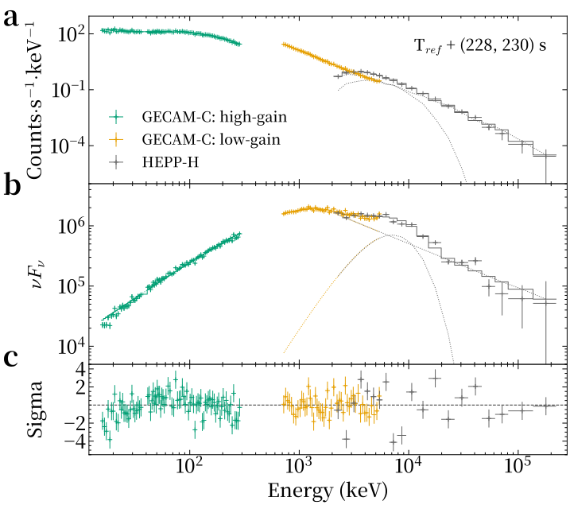
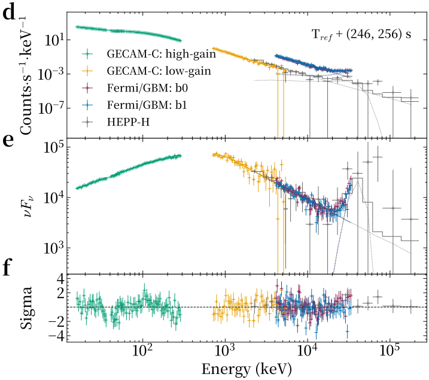
图注：GRB 221009A 两个时段的联合谱。上排为主峰 228–230 s 的 Band 加黑体，下排为衰减 246–256 s 的 Band 加高斯线。左列为各仪器计数谱和折叠模型，中列为 $\nu F_\nu$ 展开谱，下排高斯线约 37 MeV，右列为以标准差计的残差，误差为 $1\sigma$。绿色和橙色为 GECAM-C 高、低增益，紫、蓝为可用的 Fermi/GBM BGO，灰色为 HEPP-H，其分析范围 2–255 MeV。
怎么看这张图：左侧是直接拟合的计数空间，右侧给各仪器残差，中间只供比较展开谱的宽隆起与晚期窄线。对主峰，注意没有可用的 GBM 主峰计数。 核对主峰额外连续谱与衰减窄线的不同证据
来源与置信度：arXiv HTML；source verified；https://arxiv.org/html/2611.15119v1/228-230_bb_rebin.svg；https://arxiv.org/html/2611.15119v1/246-256s_Fit_spectrum_noLAT.pdf.svg
图 3
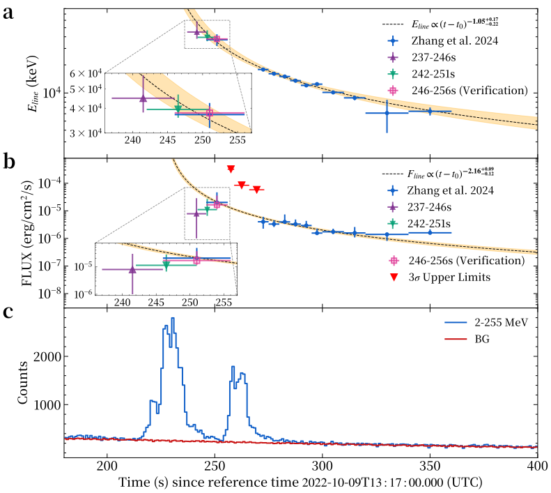
图注：谱线中心、能量通量和 HEPP-H 计数率随时间的演化。紫、青、粉十字对应 237–246、242–251、246–256 s，蓝十字为 Zhang 等早先结果。黑虚线分别示晚期中心能量 $(t-t_0)^{-1.05}$ 与通量 $(t-t_0)^{-2.16}$ 的趋势。红三角为 256–273 s 无显著谱线时按指定线型估算的 $3\sigma$ 通量上限。下图为 HEPP-H 2–255 MeV 光变。
怎么看这张图：上图看新点是否沿既有漂移律，中图看它们为何低于晚期趋势外推。红三角仅约束指定中心及宽度，重叠十字窗不是独立检出。 检验较早时间窗怎样扩展既有线能及通量演化
来源与置信度：arXiv HTML；source verified；https://arxiv.org/html/2611.15119v1/Eline_Flux.svg
强相关工作
Ravasio 等最先系统报告 BOAT 的时变 MeV 发射线。Zhang 等用 GECAM-C 与 Fermi 数据追踪了更宽的能量变化，给出本文图 3 引用的晚期能量与通量幂律。本文把不同探测器响应和更高能 MeV 数据带到较早时间，线能比较仍采用先前的趋势。
Salafia 等从辐射几何与时域谱学研究该线，Kumar 与 Panaitescu 的高纬度辐射框架说明曲率可产生近逆时间的多普勒演化。近期逆康普顿模型同样以该线为约束，比较时应同时要求模型重现能量、线宽、通量及演化，单独匹配漂移指数的信息有限。
同一事件 / 同类源线索：
相似工作：
- https://arxiv.org/abs/2403.12851
- https://arxiv.org/abs/2303.16223
- https://arxiv.org/abs/2601.14257
- https://arxiv.org/abs/2611.14363
基础理论 / 方法工作：
相反观点 / 张力线索：
（未提供）
2. Self-Regulated Cosmic-Ray Electron Acceleration in High-Mach-Number MHD-PIC Shocks
- 来源：arXiv / astro-ph.HE
- 链接：https://arxiv.org/abs/2611.15879
- 作者：Alisa Galishnikova, Siddhartha Gupta, Anatoly Spitkovsky, Xiaochen Sun
- 公告 / 来源日期：2026-11-13
- 阅读层级：重点精读
- 评分：novelty 8/10，importance 8/10，relevance 10/10，final 9.70/10
- 推荐理由：高马赫数MHD-PIC连离子流体与粒子电子背反，区分前兆、二维湍流和陡能谱，外推真实残骸须检验。
中文题目：电子电流怎样限制自己？高马赫数激波中的 Bell 湍流与粒子谱
做了什么：作者用磁流体—粒子网格（MHD–PIC）方法模拟高马赫数、准平行的非相对论激波。背景等离子体按磁流体演化，供给的高能种子电子按粒子轨迹计算。电子在激波附近获准反馈，反射回上游的部分携带电流，激发磁场涨落。模拟改变种子电子的质量供给，用一维和二维算例分别跟踪磁场、近远上游电流、流速和下游动量谱。
种子更多时，上游磁场通常更快达到饱和。进入非线性阶段后，远上游电流与高动量谱的归一化对供给变化较弱。磁湍流发展出的短尺度大振幅磁结构（SLAMS）散射一部分携流电子，使相干上游电流降低。激波的平均减速主要集中在数百个离子惯性长度内，一维高动量谱趋近 $f(p)\propto p^{-4}$。二维也看到高动量谱归一化趋同，有限的动量范围尚未确定其渐近斜率。
为什么重要：经典非线性扩散激波加速常预期一个较宽的上游前驱区，高能粒子跨越更大的流速差，谱因而随能量变硬。本文在可解析的范围内找到另一种情况。粒子压力可以很大，电流和动量沉积却局限于靠近激波的区域，谱保持接近测试粒子结果。这给理解部分超新星遗迹没有明显上凹粒子谱提供了一个可检验的机制。
理论 / 观测 / 仪器方法价值：可借鉴的是将种子供给、真正进入加速的反射粒子、相干逃逸电流与下游谱分开测量。近上游电流的增长和远上游电流的饱和同时出现，是判别电流调节的直接诊断。若用扩散模型替代粒子推进，可对照模拟检验扩散系数能否描述稀疏强磁结构、平均速度剖面与粒子驻留时间。
为什么应该关注：超新星遗迹的 GeV 至 TeV 伽马谱常用于推测激波加速效率和粒子反馈。本文说明高能谱的斜率和局部非热压力之间没有简单一一对应。与 Fermi-LAT、LHAASO 或成像大气切伦科夫望远镜的数据比较时，应再考虑离子主导的反馈、电子冷却和逃逸，并按粒子种类及辐射通道计算光子谱。
展开详细解读：文章讲解、背景、理论、重点章节、图表与相关工作
文章详细讲解
科学问题。扩散激波加速可以把一部分流体动能转给非热粒子。粒子反过来改变激波时，为什么一些数值实验仍得到接近测试粒子极限的谱？文章检验上游电流和它驱动的湍流能否把反馈限制在局部，从而缩短有效的减速区。
作者怎么做。用 Athena 的 MHD–PIC 方法，取上游阿尔芬马赫数和声速马赫数各 50，初始场与激波法线成 $30^\circ$。先在上游置入无反馈的预热测试电子。接近预计激波面后才让其参与电流和力的耦合，是否反射并进入加速由粒子轨迹决定。一维扫描供给比例 0.05%–1%，二维覆盖到 0.5%，另做分辨率、粒子数、注入分布和磁倾角检查。
关键结果。一维近上游的 $\langle B^2\rangle/B_0^2$ 在多种供给下约为 12，二维约为 8。近处电流仍随供给增大但增长变慢，远处电流在饱和时更接近同一水平。动量沉积伴随间歇的强磁压缩结构，平均流速过渡限于数百个离子惯性长度。一维尾部没有在已解析区间出现明显上凹。
局限和下一步。作者有意选择电子来增强单位质量电流并测试反馈极限，使用了缩减的离子电子质量比、人工光速及预置种子。最高供给是压力测试。模拟未包含真实遗迹的尺度、逃逸、冷却和三维湍流。验证离子主导激波能否出现同样的电流调节，需要多组分、三维和更大动态范围的计算。
关键结果是怎么做出来的
首先看图 1 的时间序列。早期横向磁场的相位和波长与反射电子的共振流激发相容，随着加速种群发展，横向场的相位关系反转，出现符合非共振 Bell 模的行为。后期能量相空间的断裂与大振幅磁结构的空间位置重合，显示这些结构能强烈散射电子。
图 2 把早期过渡和晚期饱和分开。增加 $\eta$ 先提高近上游电流并缩短磁场增长时间，远上游窗口的电流在非线性阶段却趋近。近处可有高粒子压力，能把定向动量带到很远上游的电子仍受磁结构散射。图 6 在二维也保留这一分离。
图 3 与图 4 对照瞬时和平均结构。低密度腔中粒子压力能超过当地动压，强磁高密度结构承担主要散射和动量交换。时间平均的密度和速度虽有平滑过渡，其范围只在数百个离子惯性长度内。气体远下游压缩与高能粒子实际采样的压缩应分别看。
图 5 在相近的饱和演化阶段比较不同供给量的下游谱。高动量的 $p^4 f$ 趋于平台且归一化差异较小。低动量的堆积峰随供给变化，表示粒子经历散射、加热与下游平流后的分布。不能把低能峰旁的一段斜率直接作为稳态加速谱。
二维图 7 显示稀疏供给时的通道形态与较高供给下更充满空间的波动。图 8 在已解析动量范围内也显示尾部归一化趋同。最高动量增长较慢，尾部更短；需更长时间和更宽计算域，才能测二维的渐近指数。
展开背景、理论、公式、模型和章节导读
背景知识
扩散激波加速依赖带电粒子多次穿过激波。上下游流体的速度差给粒子净能量增益，下游平流则令一部分粒子离开加速区。稳态的逃逸概率和平均增益之间的平衡产生幂律。常用的强激波测试粒子谱假设非热粒子对气体结构的反馈可以忽略。
非热粒子数足够大时，回压能使上游气体在到达气体子激波前减速。在广阔且平滑的前驱区，扩散长度随动量增长的粒子能够采样不同的有效压缩，所以较高动量的谱可能更硬。这种推论依赖局部输运描述能够代表真实的散射。
激波反射的粒子沿上游场传播，构成相对背景等离子体的电流。补偿电流与磁扰动的力耦合可触发 Bell 非共振不稳定性。磁场增长后反过来偏转驱动它的粒子，限制束流维持的长度。非线性时的强结构和线性阶段的最快增长波长不必相同。
短尺度大振幅磁结构是准平行激波上游可以出现的局域压缩与磁增强。在相空间中它们能把连贯的反射束打散。电子等离子体微观加热与离子尺度的宏观激波同时全动理学求解成本很高，因此此处把热等离子体作为流体，保留预热电子的轨迹与对流体的反馈。
基础理论 / 方法脉络
把粒子密度和净流速度分开，才能理解为什么更多粒子没有给出相同比例的电流。各向近似均匀的粒子即使压力很大，其速度在沿场方向相互抵消。持续向上游传播的少量粒子才承担远处的相干电流。
线性 Bell 模的驱动力来自宇宙线电流和背景磁场耦合，磁张力抑制尺度过小的扰动。较强电流起初偏向更短的最快增长波长。后期波动重组后，粒子在增强场中的回旋半径能接近结构尺度，于是被高效散射并由气体带回下游。
时间平均的粒子压力梯度仍有助于理解流体减速，局部动量交换则常在空间上间歇发生。低密度腔中很高的压力比并不等价于很长的整体减速区。观察近、远上游两个窗口的电流可以直接检查这种局域化。
高动量的扩散长度若已超过整个有限过渡层，继续增加动量不会再按宽前驱模型预期持续扩大采样的压缩差。因此可在有显著非热压力的模拟中同时得到近测试粒子的高动量尾。有限分辨率与截断使这一解释只适用于论文实际覆盖的区间。
公式与推导
1. 写出粒子与磁流体的耦合。 以 Gaussian 单位记电荷 $q$、动量 $\boldsymbol p$ 和气体速度 $\boldsymbol v_g$。理想磁流体电场进入洛伦兹力，对动力学粒子作功并转移横向动量。对应原文式（1）–（3），代码推进使用人工光速参数。
2. 把初始反射电流与种子供给连接。 原文式（13）。$\eta$ 是给定的电子质量供给比例，$f_{\rm refl}$ 是起初反射的份额。$J_0=en_{i,0}v_{\rm A,0}$ 归一化电流，$(q/mc)_e$ 用背景离子荷质比归一化。$4/3$ 来自理想强激波在下游参考系扫入的流速。
3. 电流设定线性磁扰动尺度。 采用原文式（14）的代码归一化写法，$d_i=c/\omega_{pi}$ 为离子惯性长度。其余条件固定时，增大 $\eta$ 使估计的初始 Bell 波长变短。进入非线性后，磁功率会转向更大结构，因此不能将这个线性波长代作晚期唯一散射尺度。
4. 粒子能否被散射取决于回旋半径和场的结构。 教学近似，$p_\perp$ 是相对局部磁场的横向动量。电流增强后磁场 $B$ 变大，$r_L$ 变小。若它与非线性结构的尺度接近，较强的偏转能减少粒子的定向输运。
5. 有限的散射长度决定采样区域。 原文 §III.2 用 Bohm 型近似作量级比较，$\kappa$ 为扩散系数，$u_1$ 是激波参考系的入流速率。对照平均速度过渡尺度约 $200d_i$，作者估计动量过渡落在几十倍 $p_0=m_e v_0$ 的量级。实际输运有间歇结构，不能把近似当成逐粒子测量。
6. 压缩比如何进入幂律。 §III.1 的稳态扩散激波加速关系以 $r$ 表示散射过程中粒子采样的有效压缩。对 $r=4$ 得 $q_p=4$，于是用 $p^4 f(p)$ 绘制的谱尾成为平台。远下游气体密度比和该 $r$ 分别由不同观测量定义。
7. 只在模拟实际覆盖的尾部积分。 原文式（17），$f$ 为动量分布，$m_s$ 为粒子质量，$\gamma_s$ 为洛伦兹因子，$v_s$ 在气体共动系定义。作者用 $p/p_0\sim100$–$1000$ 的一维尾部估计 $P_{\rm CR}^{\rm eff}\sim0.3\rho_0v_0^2$。上下限之外缺少逃逸和冷却信息，这一比值只衡量所解析的压力分量。
模型拟合 / 应用方法
这是受控数值实验。激波由入流撞击反射壁产生，计算在下游静止参考系进行。长度用离子惯性长度归一化，时间用背景离子回旋时间归一化。纵向盒长为 38400 个离子惯性长度，二维横向盒宽为 400，基线网格为一个离子惯性长度。
生产算例上游使用单能种子电子，并用替代能量、热分布和激活反馈的规则测试稳定性。注入位置由理想激波传播估计，实际激波位置从平滑气体速度的阈值和后续区间识别。用滑动时间窗对位置拟合直线得到激波速度，减少短时重组的波动。
近上游磁能和压力比与近、远两个窗口的电流并行诊断。时间平均剖面按实际激波位置对齐，再将气体压缩和粒子压力做比较。下游谱则在各维度各自规定的距离窗提取，比较饱和后相近的动力学阶段，以免把不同截止动量混成供给量效应。
作者检查种子能量、推进到反馈态的条件、粒子删除位置、粒子数、分辨率及磁场倾角。主要趋势在这些试验中维持。减小人工光速时上游最大电流和磁饱和值会下降，表明精确的饱和值依赖可达速度范围。
二维计算的种子速度、反馈距离和可解析动量范围有变化，二维与一维对照支持机制相同，但暂不能精确测量维数变化对所有数值的独立影响。供给最大时激波可能接近预设的反馈区，后续阶段不能作为稳定饱和样本。
重点章节 / 结果段落怎么读
§II.1–II.2。先看热背景和动理学电子如何交换动量，再把种子供给比例、开始反馈的空间条件、真正反射比例区分清楚。
§III.1，图 1–4。按磁结构演化、近远电流分离、瞬时动量交换和平均流体过渡的顺序读，明确哪些量由局地结构控制。
§III.2，图 5 与式（16）–（17）。分别读低动量峰、高动量平台和截断，注意压力积分的动量范围。
§III.3–IV，图 6–8。用二维验证磁场、电流与高动量归一化的相似趋势，保留二维谱指数和离子反馈的开放问题。
关键图表与解读
图 1
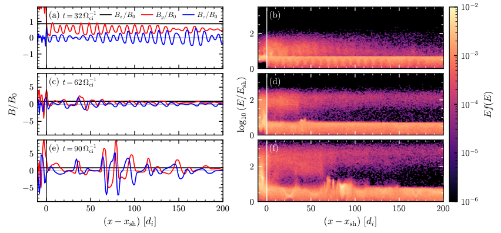
图注：一维 $\eta=0.25\%$ 算例。左列为距离激波位置 $x-x_{\rm sh}$ 的三个归一化磁场分量，三行对应 $32$、$62$、$90\,\Omega_{\rm ci}^{-1}$。右列给出电子能量相空间密度 $Ef(E)$，能量以激波尺度 $E_{\rm sh}$ 归一化。左右列的黑、白竖线标出激波位置。
怎么看这张图：从早期相干波看到晚期大幅结构，比较右下相空间分布的截断与左下磁峰位置。空间上的对应关系支持局地强散射。 对照磁场的时间演化与电子相空间
来源与置信度：arXiv HTML；source verified；https://arxiv.org/html/2611.15879v1/fig1_v2.png
图 2
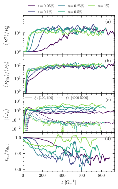
图注：一维上游平均诊断随时间的变化。（a）归一化磁能密度，（b）宇宙线与磁压力比，（c）沿激波法线的平均电流幅值，（d）以理想强激波速度归一化的激波速度。颜色表示种子供给比例。实线取距激波 100–600 个离子惯性长度的近上游，（c）虚线为 4000–5000 个离子惯性长度的远上游。前三面板在 30 个离子回旋时间上平滑，速度以 100 个时间单位的滑动窗拟合。
怎么看这张图：比较（a）的饱和高度和到达时间，再看（c）远上游虚线的趋同。两处电流的差别是判定有效输运是否自调节的关键。 比较不同供给量在近远上游的电流与磁饱和
来源与置信度：arXiv HTML；source verified；https://arxiv.org/html/2611.15879v1/time_evolution_selfreg.svg
图 4
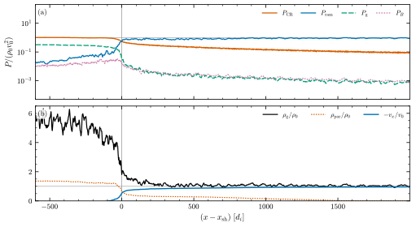
图注：一维 $M_{\rm A}=50$、$\eta=0.25\%$ 在 $t=200$–$500\,\Omega_{\rm ci}^{-1}$ 的平均压力和流体结构。（a）动压、宇宙线标量压力、气体压力与磁压力，以远上游动压归一化。（b）归一化气体密度、流速和粒子电荷密度。竖线为激波位置，横轴为激波参考系的距离。
怎么看这张图：沿横轴对照压力抬升和速度过渡宽度。远下游气体密度的增加与高能粒子穿越过渡层所采样的压缩有不同口径。 直接显示平均减速和压力沉积的空间尺度
来源与置信度：arXiv HTML；source verified；https://arxiv.org/html/2611.15879v1/pressure_average_v2.svg
图 5
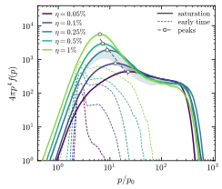
图注：不同一维种子供给量下，在距激波下游 200–800 个离子惯性长度内测得的电子动量谱 $4\pi p^4 f(p)$。虚线对应 $t=50\,\Omega_{\rm ci}^{-1}$，实线为相近饱和阶段各自 60 个时间单位窗口的中位谱。灰点标出主峰，灰虚线指示主峰随供给比例的变化。
怎么看这张图：先比较各实线的高动量平台，再看低动量峰与末端截断。平台表示所解析区间接近测试粒子指数，不能外推到任意高动量。 展示饱和谱尾趋同及低动量种子记忆
来源与置信度：arXiv HTML；source verified；https://arxiv.org/html/2611.15879v1/p4_spectrum_v2_perrun.svg
图 8
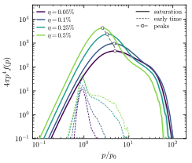
图注：与图 5 相同的动量谱诊断，改用二维模拟。下游取样区距激波 700–1500 个离子惯性长度。虚线为早期谱，实线为可比较的较晚阶段，峰位置按原图标记。
怎么看这张图：比较各颜色高动量尾的归一化和可用范围。与一维结果对照时注意二维尾部更短，平台斜率还无法直接量定。 二维高能归一化的交叉检查及谱指数限制
来源与置信度：arXiv HTML；source verified；https://arxiv.org/html/2611.15879v1/p4_spectrum_2d_v2.svg
强相关工作
Bai 等 2015 年给出了 MHD–PIC 的流体和动理学粒子耦合方案。Riquelme 与 Spitkovsky 2009 年的非线性 Bell 研究为磁场变强后改变粒子电流提供了基础。本文将这种反馈推进到带有实际激波反射、多个供给量及下游非热谱的长时间模拟。
Haggerty 与 Caprioli 2020 年及 Diesing 与 Caprioli 2021 年讨论了激波下游磁结构漂移如何改变散射中心有效速度。本文强调另一段输运，上游 SLAMS 可以限制压力梯度和有向电流延伸的距离。真实遗迹可同时存在上下游反馈，应利用结构、速度和谱的联合诊断判断哪一段占主导。
同一事件 / 同类源线索：
（未提供）
相似工作：
基础理论 / 方法工作：
相反观点 / 张力线索：
（未提供）
3. A self-shadowing black hole accretion disk at sub-Eddington luminosities
- 来源：arXiv / astro-ph.HE
- 链接：https://arxiv.org/abs/2611.14626
- 作者：M. Armas Padilla, T. Muñoz-Darias, J. Sánchez-Sierras, M. Shidatsu, D. Mata Sánchez, V. A. Cúneo, E. A. Saavedra, A. Ambrifi
- 公告 / 来源日期：2026-11-13
- 阅读层级：重点精读
- 评分：novelty 8/10，importance 8/10，relevance 9/10，final 9.35/10
- 推荐理由：多波段爆发衰减的反直觉辐照转变与同步X射线支持次爱丁顿盘自遮挡，须保留几何推断和单源边界。
中文题目：亮度下降后外盘反而受到更强照射：MAXI J0637−430 的亚爱丁顿内盘遮蔽
做了什么：黑洞双星 MAXI J0637−430 在 2019 年暴发峰值附近处于盘占主导的 X 射线软态。VLT/X-shooter 在约两周间隔内三次同时测量光学及近红外光谱。最亮时，外盘谱里有强烈的双峰氢和中性氦复合线。后来 X 射线和光学连续谱一起变暗，氢与中性氦线却几乎消失，只留较弱的高激发电离氦线。这组变化指向较暗阶段外盘表层反而高度电离，难以用中心光度平滑衰减来解释。
作者用三组宽带 X 射线谱跟踪内区，最早一组与首期光学同步。盘加冕双成分无法描述软态宽带谱。采用黑体照明反射作回返盘辐射的代理后，反射分量占拟合通量的比例约从 33% 降至 18%、4%，盘温径向指数由 0.58 转向标准薄盘附近。作者据此提出，峰值时增厚的内盘遮挡外盘，随光度下降变薄后才让外盘受到强照射。本文采用的光度标度把几何变化放在约 $0.1$–$0.2\,L_{\rm Edd}$，绝对数值取决于距离、质量及软硬态转变标定。
为什么重要：单独拟合软 X 射线超额时，反射、内缘以内的物质、温冕和电离外流都可能提供额外分量。外盘复合线在中心变暗时消失，给这些解释增加了一个独立的物理条件。内区反射随暴发衰减，外区电离却从首期到第二期增强，解除遮蔽可以同时解释两类观测。
理论 / 观测 / 仪器方法价值：可借鉴的是在同一软态内联合量化外盘线等值宽度、真实连续谱通量、中心硬度和宽带 X 射线残差。先排除连续谱变亮造成的表观线稀释，再比较同时段内盘的径向温度与反射模型。把入射效率和中心光度分开，可将外盘作为内流几何变化的间接探针。
为什么应该关注：黑洞双星自旋、X 射线偏振和盘风解释都依赖内区几何。若薄盘模型漏掉了暴发峰值的垂直结构，自旋和反射归因会随谱模型改变。可在短周期黑洞双星的同一软态安排光学及近红外、宽带 X 射线与偏振的共同观测，检验线谱开关、反射变化与偏振是否沿模型预测的方向演化。
展开详细解读：文章讲解、背景、理论、重点章节、图表与相关工作
文章详细讲解
科学问题。 标准吸积薄盘的垂直尺度远小于半径。理论上辐射压随吸积增强而抬高内区盘面，使内盘可以挡住向外盘传播的中心辐射。观测通常先看到 X 射线谱出现额外分量，但单谱难以确定额外光来自厚内盘、冕、内缘以内流体，还是外流。本文问的是，在中心仍处于软态时，外盘能否提供独立的照明变化证据。
作者怎么做。 选 2019 年 11 月 5 日、11 月 17–18 日及 12 月 2 日的三次 X-shooter 观测，在同一仪器内覆盖 3000–24800 Å。以同期 Swift、NICER 监测画出光变和硬度强度图。首期的 NICER 与 NuSTAR 同光学时间，后两组 Swift 与 NuSTAR 是夹在第二次前后、第三次之前的近同时观测。SOAR 在首期前一天的光学谱用来核验早期强线。
关键结果。 峰值时 Balmer、Paschen 和 He I 双峰线提示较低电离的转动发射区。后续强线在下降的连续谱上消失，He II 仍可见。X 射线建模中返回盘辐射的反射代理从约三分之一减至 4%，温度径向斜率由 0.58 变为 0.73 和 0.78。两端证据一起指向高光度时内盘既能强化局部回照，也能截断外盘受到的照明。光度降低后，较低的盘面遮蔽消退，短周期系统尺寸小，外缘也可被有效电离。
局限和下一步。 观测未解析内盘厚度，也没有直接测量外盘收到的辐照、线形成半径或密度。黑体照明反射只是简化代理，拟合得到的反射通量分数也不能直接等同于返回光子的轨迹分数。周期与过渡光度标度有误差。下一步可用更密集的同日多波段观测分辨转变时间，再用包含有限厚度、回返辐射和多次反射的射线追迹同时检验反射和外盘照射。
关键结果是怎么做出来的
第一条证据来自同一源软态中的光度反转。图 1 将三次光谱标在 X 射线监测曲线上，硬度相近而强度下降。光学线的变化跨约两周发生，所以看见的是一段区间两端的切换，具体发生时间仍落在采样间隙中。三组宽带 X 射线也与光学覆盖同一阶段，只有首期严格同时。
第二条证据控制了连续谱与仪器效应。X-shooter 三臂同时获取不同波段，使 Balmer、Paschen 及氦线能够互相印证。作者独立测量 Hα、He I 5876 Å 和 He II 4686 Å 的等值宽度，剔除容易受宽吸收和星际带混淆的 Hβ。SOAR 首期前一天给出相近等值宽度。扩展数据图 1 的绝对通量谱确认连续谱也在下降，故线消失不能由更亮的连续谱稀释。
第三条证据来自宽带拟合的残差结构。将 1–10 keV 的 NICER 或 Swift 与 5–70 keV 的两台 NuSTAR 模块联合，常规盘加热康普顿谱的首期 $\chi^2/{\rm dof}$ 为 3668.5/1266。换相对论盘或可变温度指数仍不足。康普顿照明的反射改进但仍有残差。黑体照明反射加可变温度指数三期合计 4532.05/4233，给出讨论内流演化的统一框架。
第四步用同一模型比较三个时期的谱分解。表 1 中盘温指数由 $0.58\pm0.01$ 到约 0.73、0.78，反射占比同步从 33% 走到 18%、4%。两个量都有模型依赖，第三期在第三次光学之前。适当的证据强度是随衰减出现向薄盘特征过渡，两组数值不能作为几何的两次独立直接测量。
最后把同源诊断扩展为可检验的跨源趋势。图 2 比较四颗黑洞暂现源按光度与周期排列的 Hα 线，短周期的 MAXI J1803−298 与 Swift J1727.8−1613 也有线减弱，周期约 16.5 小时的 MAXI J1820+070 保留强线。较大外盘在相同有效光度下可保有更低电离的远端区域；四源比较提示尺寸效应，样本还不足以拟合普适周期分界。
展开背景、理论、公式、模型和章节导读
背景知识
黑洞暂现双星的伴星通过洛希瓣向黑洞输送物质，角动量使物质先形成吸积盘。盘内黏滞和磁应力将角动量向外输运。高吸积软态时，多温热盘是主要的 X 射线源，少量热冕康普顿化产生更硬的连续谱。外盘温度低、发射面积大，主要在光学及近红外可见。
盘发射线探测的是气体表层。适度电离的氢和氦可通过复合级联产生 Balmer、Paschen 与 He I 线。转动盘的前后两侧给出相反多普勒位移，可能形成双峰。高度电离的表层不再维持同样的低电离线强度，但 He II 可以相对清楚。光学发射线还可能混有风，双峰和跨线种的一致变化为盘解释提供线索。
爱丁顿光度来自电子散射辐射力与引力的平衡，常用于无量纲化中心源的总辐射功率。薄盘、厚内盘和漏斗形状都由局部垂直支撑及能量输运决定，不能只从总光度精确推出某个半径的厚度。观测通常用距离、质量或状态转变光度估算其爱丁顿比，故绝对阈值会有系统差。
在强引力区，部分盘光弯折回盘面，再经散射、吸收和荧光形成反射。垂直增厚可改变返回比例、入射角和遮挡。局部增强内盘回照可以与外盘失去直视中心同时发生，因为两者对应不同方向和距离。本文用两类现象的联动检验这一几何解释。
基础理论 / 方法脉络
首先区分中心总光度和外盘接收的有效电离光度。前者来自 X 射线及其能段外修正，后者还受盘面遮挡、照明角度和谱形影响。中心变暗时，若朝外盘的可见份额增加足够多，外盘接收的电离通量仍会增加。把这部分几何透射单列，便能提出对观测的条件性检验。
电离参数将照射光度与密度、距离配对。维持相同密度和半径时，降低中心光度本应使电离减弱。论文的谱线推断需要相反变化，提示有效透射上升或发射区密度、半径变化。该参数不是线强的完整预测，具体线源还需热平衡与辐射转移。
遮蔽取决于从中心看盘表面的仰角。若外盘的厚径比低于内区隆起，沿近盘面传播的光线会被内区截断。外盘越向外张开，越可能在一定半径重新露出。实际散射和高处冕照明会填补几何阴影，文中的解析尺度是数量级检验。
盘温度斜率 $p$ 将多温光谱和热剖面相连。薄盘足够远离内边缘时 $p$ 接近四分之三。厚盘、平流、照明和谱硬化都可改变有效温度分布，因此测得平缓的 $p$ 提供几何线索，不能直接反演唯一 $H/R$。
不同系统的轨道周期影响外盘最大半径。短周期盘的发射区被限制在较紧凑尺度，照明增强可影响更大比例的低电离区域。较长周期系统可以在更大的半径保留较冷物质，所以同样的内盘演化未必使其发射线消失。
公式与推导
1. 统一亮度标度。 教学补充。电子散射主导且近似各向同性时，$\kappa_{\rm es}$ 为单位质量不透明度，$M$ 为黑洞质量，$L_{\rm Edd}$ 单位为能量每秒。定义观测用爱丁顿比 $\ell$。
2. 用状态转变标定流量。 教学补充，承接 Methods 的软硬态转变口径。$F_{\rm bol,tr}$ 为去吸收转变总流量，$d$ 为距离。若沿用各向同性等效光度与常见转变爱丁顿比，可用同源流量比给出峰值量级。
3. 表示盘的热谱剖面。 原文盘谱模型。$T_{\rm in}$ 为内缘温度，$r_{\rm in}$ 为参考半径。这里用 $p$ 描述观测拟合的有效斜率；标准薄盘在远离内边界时约为 $3/4$。
4. 把照明与电离联系起来。 Methods 的 $\xi=L/(nr^2)$。写作 $L_{\rm eff}=f_{\rm irr}L$ 是解释遮蔽的教学展开。$n$ 为气体数密度、$r$ 为厘米单位的距离，$\xi$ 的单位为 erg cm s$^{-1}$。
5. 计算反常电离的要求。 教学补充。由上式取后期与峰值比。若只为数量级估算而固定 $n,r$，中心光度减半时，要让电离参数升高十倍，方向照射效率需升约二十倍。作者未拟合这个效率比。
6. 用外盘张开律估计遮蔽半径。 原文 Methods 的照射盘处方。$H$ 是盘高、$R$ 是半径、$R_g=GM/c^2$。给定质量与爱丁顿比时，外盘仰角随半径缓慢增大。
7. 求外盘露出阴影的界线。 原文 Methods 的几何估算。取 $M=8M_\odot$、$\ell=0.2$，令外盘角等于内区仰角 $\eta=(H/R)_{\rm inner}$。若 $\eta=0.05$，给出约 $1.3\times10^6R_g$。它是示例计算，不是直接测得的厚度。
8. 理解轨道周期的作用。 教学补充。开普勒定律给出总质量 $M_{\rm tot}$ 和分离 $a_{\rm bin}$。近似固定质量比时，潮汐限制下的外盘半径随 $a_{\rm bin}$ 缩放，再通过第 4 步的半径因子影响电离。
9. 区分可观测的反射份额。 教学定义与表 1 对应。对同一拟合波段，$F_{\rm disk},F_{\rm comp},F_{\rm refl}$ 分别为热盘、冕、黑体照明反射模型通量。这一能通量比受反射谱与观测角度影响，不能直接代入第 5 步充当外盘透射率。
模型拟合 / 应用方法
监测谱使用盘加热康普顿化获取去吸收流量与硬度。硬度取 4–10 keV 与 1–4 keV 流量之比。作者说明某些监测谱的参数并不物理，分析只用这组简化模型获得硬度强度图。吸收柱固定为约 $4\times10^{20}$ cm$^{-2}$，由光学 Na I 吸收估算消光再转换。
宽带谱用同一组物理参数联合 NICER 或 Swift 与 NuSTAR 两个模块。两个 NuSTAR 交叉校准常数自由，软 X 射线仪器常数固定为一。标准盘和康普顿组件的种子温度与内盘温度相连。扩展数据图 3 对比残差，显示单改盘或加入以冕照明为主的反射仍会残留结构。
最终模型为 diskpbb、Nthcomp 与 relxillNS。反射用单温黑体作返回盘光的代理，内外发射率指数均固定为 3，内缘设在最内稳定圆轨道，反射只取再处理分量。跨期绑定自旋、倾角与铁丰度，表中自旋约 0.58，倾角约 70°。这些是该模型的条件解，不能作为独立几何或自旋测量。部分参数靠近模型网格界限，更应看整体演化。
光度用软转硬约 $0.02\,L_{\rm Edd}$ 标定，文献常见范围约 $0.01$–$0.04\,L_{\rm Edd}$，本文由此估算峰值约 $0.1$–$0.3\,L_{\rm Edd}$ 并采用 0.2。地球流量、模型推断的内盘几何和爱丁顿光度的物理比值需要区分。采用不同距离或盘各向异性后需重新推断转变尺度。
作者保留内缘内区域、温冕、高密度反射和离化外流为软谱超额的替代来源。模型优劣来自残差与多波段一致性，未完成完整的有限厚度反射与外盘电离联合似然。要区分替代模型，可从同一次吸积几何演算内盘照射和外盘入射通量，再将预测线强与多期数据比较。
重点章节 / 结果段落怎么读
- 正文开头和图 1 先确认三次光学谱的软态、硬度与亮度排序，查低电离线和 He II 在各期的变化。
- Methods 的 Observations 和 Evolution 小节核对 X-shooter 波段、SOAR 复核、等值宽度选线与同期性。扩展数据图 1 提供真实连续谱变暗的证据。
- Methods 的 X-ray spectral analysis 与扩展数据图 2、3 先看常规模型残差，再看反射分量、温度斜率及参数绑定。表 1 把三期比例放在统一口径。
- Self-shadowing 和 Ionization parameter 小节用厚径比和电离参数把内区变化接到外盘。将示例计算和直接测量分开。
- 图 2、3 与 Methods 的短周期系统比较，把同源结论和跨源尺度推论放在一起，读出样本与周期分界的局限。
关键图表与解读
图 1
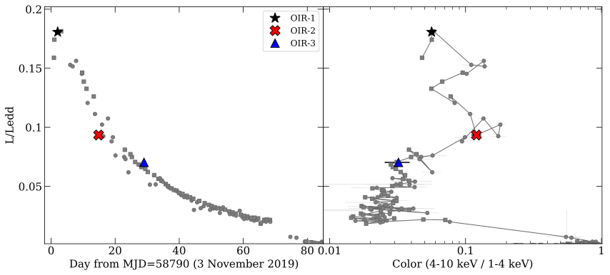
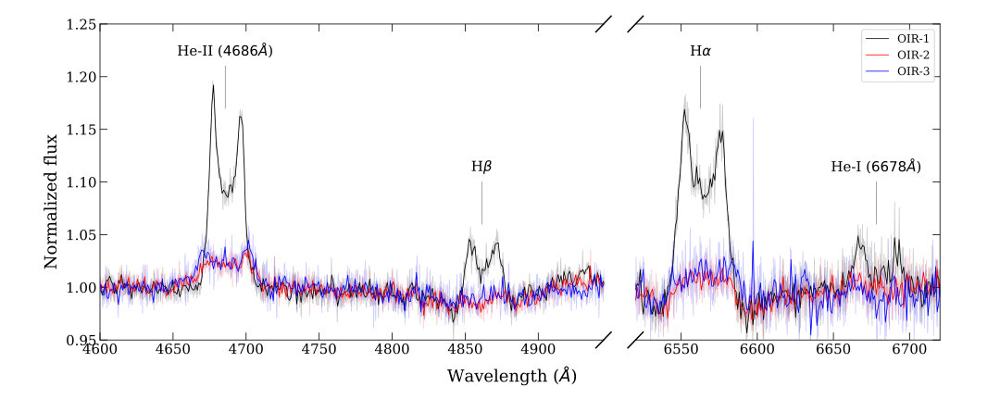
图注：上排为 NICER 与 Swift 的 X 射线光变和硬度强度图，灰色方块及圆点对应两仪器，误差为 90% 区间。黑星、红叉、蓝三角为 VLT 的 OIR-1、2、3。下排是三个时期截选的归一化光谱，峰值有强氢和中性氦双峰线，后两期主要剩较弱 He II。
怎么看这张图：先在上排确认三个标记仍位于同一软态段，再对照下排的氢、He I 与 He II，读出亮度下降与表层电离增强的反常并存。 展示多波段遮蔽推断的主要观测事实。
来源与置信度：arXiv HTML；source verified；https://arxiv.org/html/2611.14626v1/HID+LC_Ledd_linear_Swift+Nicer_2.0percent.svg；https://arxiv.org/html/2611.14626v1/J0637_DetailLines.svg
扩展数据图 2
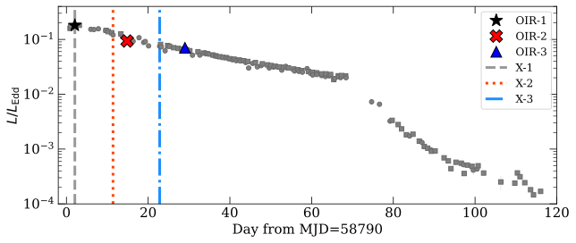
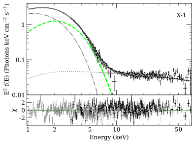

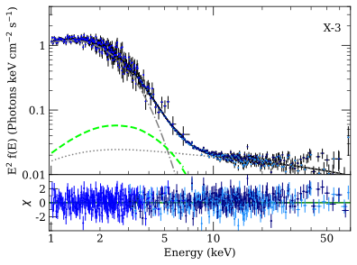
图注：上排为 NICER 与 Swift 监测光变，彩色标记为三期 VLT，竖线为三期宽带 X 射线观测。下排为三期展开谱，依次为 NICER 或 Swift 与 NuSTAR 联合数据。实线为总模型，点划线、点线和绿色虚线为热盘、康普顿化与反射。下方残差以标准差为单位，误差为 90% 区间。
怎么看这张图：竖线可见后两次 X 射线谱与光学为近同时。跟踪下方绿虚线份额，分辨反射变化和总强度降低。 核对照明变化的时序与宽带分量分解。
来源与置信度：arXiv HTML；source verified；https://arxiv.org/html/2611.14626v1/LC_2.0percent_NuSTAR.svg；https://arxiv.org/html/2611.14626v1/Epoch1_X-ray_ALL3_DISKPBB.svg；https://arxiv.org/html/2611.14626v1/Epoch2_X-ray_ALL3_DISKPBB.svg；https://arxiv.org/html/2611.14626v1/Epoch3_X-ray_ALL3_DISKPBB.svg
扩展数据图 3

图注：首期 1–70 keV 展开谱，黑为 NICER，深红和深蓝为两台 NuSTAR 模块。上部实线是最终拟合，点划、虚线与点线表示热盘、热康普顿和反射。下部依次是最终模型、康普顿照明反射模型、盘加康普顿模型的残差，单位为标准差。
怎么看这张图：先对比三排残差的连续结构，再读上方的组分线。加入黑体照明反射改善拟合，但仍需和光学证据合用来解释几何。 显示模型差异的实测残差，而非仅报告拟合结论。
来源与置信度：arXiv HTML；source verified；https://arxiv.org/html/2611.14626v1/Epoch1_X-ray_dark_DISKPBB.svg
图 2
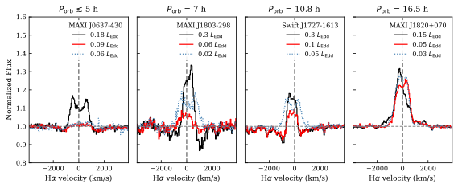
图注：四颗黑洞暂现源在软态衰减中三种光度阶段的归一化 Hα 线。由左至右是 MAXI J0637−430、MAXI J1803−298、Swift J1727.8−1613、MAXI J1820+070，轨道周期约小于 5、7、10.8、16.5 小时。短周期源变暗时线弱化更明显。
怎么看这张图：按每一列读同一个源随光度的变化，再横向比较，长周期源仍能留有冷的远端盘区。比较样本小，不能拟合精确分界。 将同源变化扩展到不同盘尺寸的可检验趋势。
来源与置信度：arXiv HTML；source verified；https://arxiv.org/html/2611.14626v1/Halpha_Multipanel_Evolution_3Epochs_Nature.svg
图 3
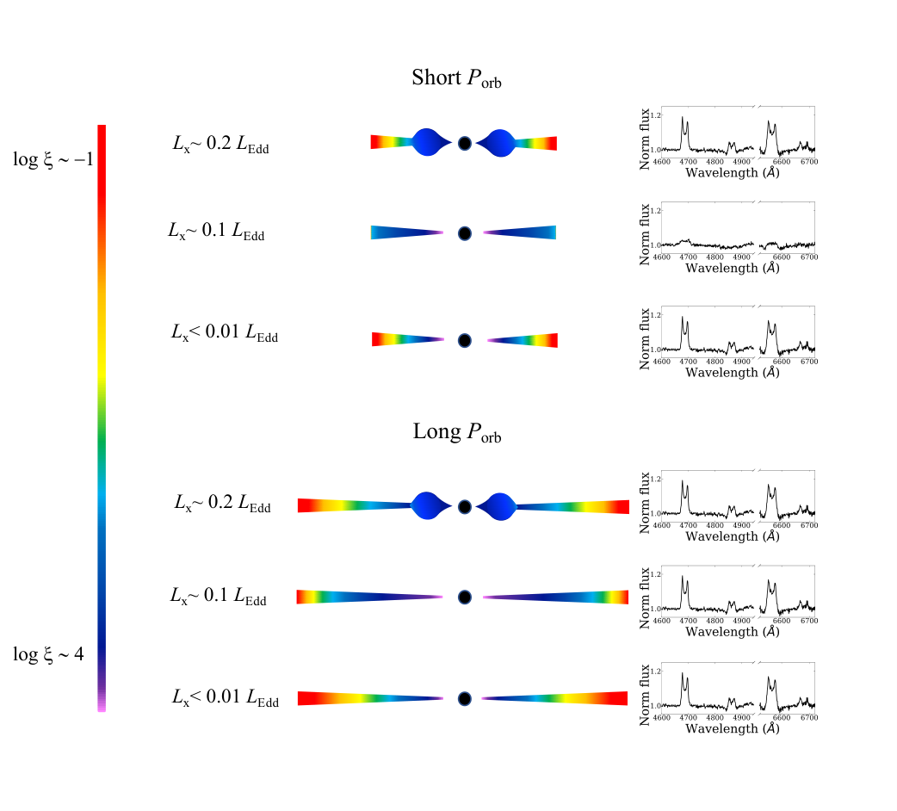
图注：内盘遮蔽与外盘发射线的物理示意图。上、下分别为较短及较长轨道周期系统，纵向沿爆发衰减。早期内盘隆起挡住外盘照明；衰减后外盘重新受照，短周期系统低电离线被压低，长周期系统更远处可保留发射线。
怎么看这张图：先比较同一行的内盘和远端盘面，再按时间读遮蔽解除。该图画的是作者的几何解释，厚度和范围为示意。 用同一示意连接光度演化、盘尺度和线形成。
来源与置信度：arXiv HTML；source verified；https://arxiv.org/html/2611.14626v1/Sketch.png
强相关工作
Tetarenko 等用同一源的光学谱与连续谱追踪受照盘几何。Soria 等讨论较短的轨道周期和软硬态标定。Lazar 等用同一暴发的 NuSTAR 与 Swift 讨论标准软态模型的额外谱分量。本文把外盘复合线变化和相同衰减阶段的宽带谱联在一起，补足了只看某一侧证据的限制。各项参考部分观测可能重叠，不能简单计作独立重复实验。
Connors 等在 XTE J1550−564 讨论盘回返辐射的反射，Wilkins 等从强引力射线追迹检验回返光的路径。Zhao 等在较亮的 4U 1543−47 暴发讨论增厚盘。本文的新增之处是用较低光度下外盘受照反转检验内区的结构变化。检索词可用 returning radiation、disk self-shadowing 与 irradiated outer disk。
同一事件 / 同类源线索：
- https://doi.org/10.1093/mnras/staa3861
- https://doi.org/10.1093/mnras/stac1896
- https://doi.org/10.3847/1538-4357/ac1bab
相似工作：
基础理论 / 方法工作：
相反观点 / 张力线索：
（未提供）
4. Discovery of a likely supermassive neutron star in a remarkably wide binary
- 来源：arXiv / astro-ph.HE
- 链接：https://arxiv.org/abs/2611.14998
- 作者：Xinlin Zhao, Song Wang, Guang-Yao Xiao, Meng Sun, Roberto Soria, Kyle Akira Rocha, Seth Goggage, Pengfei Wang
- 公告 / 来源日期：2026-11-13
- 阅读层级：重点精读
- 评分：novelty 8/10，importance 8/10，relevance 9/10，final 9.35/10
- 推荐理由：Gaia DR2/3与两套速度数据及光谱解缠约束宽轨质量缺口暗伴星，Science Advances同文只计一次。
中文题目：一颗红巨星绕着什么转？J0008+0128 的宽轨道指向约 2.2 太阳质量的暗伴星
做了什么：作者从单线分光双星 J0008+0128 入手，把 LAMOST、APOGEE 的红巨星视向速度与 Gaia DR2、DR3 的五参数目录联合拟合。在约 $1218\pm3$ 天的低偏心轨道上，视向速度约束质量函数，两个 Gaia 目录对轨道运动吸收程度的差异约束倾角和距离。结合红巨星的表面重力和光度资料，得到暗伴星代表质量 $2.20^{+0.14}_{-0.13}\,M_\odot$，各估计的保守外包络为 $1.8$–$2.8\,M_\odot$。
普通主序伴星在光谱与光度中预期留下可查的痕迹，现有观测没有发现。这样重且宽轨道的暗伴星使大质量中子星成为值得追踪的解释。低质量黑洞及由两个暗天体组成的内双星仍可行，FAST 和 Einstein Probe 的未检出分别约束特定射电和 X 射线亮度。
为什么重要：致密星质量测量常依赖射电脉冲、吸积辐射或引力波。宽轨道、低吸积的天体可能被这些选择遗漏。利用可见伴星的反射运动可进入这一空白区域，并检验恒星级黑洞与中子星质量分布的连接处。该质量区间接近一些中子星状态方程的最大质量区，只有在伴星类型被证实后才可用于约束状态方程。
理论 / 观测 / 仪器方法价值：该工作提供了在 Gaia 历元天体测量尚未公开时使用两个五参数目录的方法。先把假设轨道投影至预测扫描时刻，仿造各发布版本的单星拟合，再比较其目录参数。分光质量函数给出动力学下限，光谱分离、谱能量分布和多波段上限分别限制不同类型的可见或吸积伴星。
为什么应该关注：在检索静默致密伴星时，可首先联合长基线速度和 Gaia 目录排定候选，跟踪恒星表面重力、距离和光心假设如何传播到暗伴星质量。后续 Gaia 历元数据可以直接检验推得的倾角与残差结构。寻找暗星的周期性辐射或更紧的内双星信号，可帮助判别目前留下的几种解释。
展开详细解读：文章讲解、背景、理论、重点章节、图表与相关工作
文章详细讲解
测的是可见星。 J0008+0128 的主导光源是一颗红巨星，SED 拟合得 $T_{\rm eff}=4929^{+26}_{-22}$ K、$R_1=5.39\pm0.24\,R_\odot$。不同光谱巡天对 $\log g$ 的系统差异需单独计入。表面重力法的贝叶斯代表质量为 $1.67\pm0.15\,M_\odot$，演化等时线给约 $1.45$–$1.52\,M_\odot$，共同决定暗星质量误差。
反演两个目录。 先用速度数据拟合周期、偏心率和半振幅，再以不同轨道假设生成 DR2、DR3 扫描位置。单星拟合把轨道信号吸收到位置、视差和自行。作者对每条模拟轨道重复这一步，与两个实际目录的参数及协方差比较，选出同时兼容光谱与目录的倾角。
亮伴星检验。 红巨星约 $16\,L_\odot$，质量范围内的单颗主序伴星预计约 $11$–$81\,L_\odot$。光谱分离、紫外至近红外 SED 和近两端速度的谱形能共同检验普通恒星假设。填充洛希瓣约 2%，加上巨星实际温度，反对作者所测的近期剥离星解释。
剩余天体类别。 论文检验了 X 射线和射电辐射，未检测到对应信号。低吸积中子星可以暗到低于此次阈值，低质量黑洞和紧凑双星同样有可能很暗。低偏心、宽轨道给演化历史提供额外信息，是否经历较小质量抛射、定向反冲或三体过程仍依赖形成假设。
关键结果是怎么做出来的
视向速度下限。 速度数据单独拟合得到 $P=1217.19^{+0.58}_{-0.51}$ 天、半振幅 $16.75\pm0.03$ km/s、偏心率约 0.08。质量函数为 $0.587\pm0.004\,M_\odot$，在各可见星质量估计下，以 $i=90^\circ$ 计算的暗伴星质量下限中心值为 $1.86$–$2.23\,M_\odot$。图 2a 折相所用周期与文章联合估计的约 1218 天口径应分开。
轨道联合测量。 Gaia 时间跨度约 1000 天，覆盖完整周期约 82%。联合距离约 $1465^{+67}_{-62}$ pc，比 DR2 单星距离 $1185\pm205$ pc 大，与 DR3 $1423\pm69$ pc 相容。用更新距离重做 SED，半径和星质量再输入联合拟合。先约束轨道和距离，再收紧光度质量，可减少循环放大。
把倾角系统误差带入。 方法与类似 Gaia NSS 样本比较时，倾角差的散布约 $10.09^\circ$、光心半长轴差约 0.25 mas。作者将约 $10^\circ$ 散布与本对象约 $5^\circ$ 拟合误差按平方相加，报告 $73^\circ\pm11^\circ$。样本多数借用了 NSS 轨道先验，这个比较校准同类方法的恢复散布，不能给目标提供一套独立绝对轨道。
质量的两个口径。 按各巨星质量估计和倾角传播，暗伴星约在 $1.8$–$2.8\,M_\odot$ 的保守包络。贝叶斯汇总 $2.20^{+0.14}_{-0.13}\,M_\odot$ 与包络回答不同问题。后者包含替代的恒星参数估计；用较窄的代表值误差宣称排除所有低质量黑洞会超出证据。
跟进观测。 Einstein Probe 给 0.5–10 keV 光度上限 $8.8\times10^{30}$ 或 $6.0\times10^{30}$ erg/s，分别假定幂律光子指数 1.5 或 2.0。FAST 在 1.05–1.45 GHz 未检出持续或脉冲辐射，灵敏度约 $2\,\mu$Jy。现有数据排斥达到这些亮度且可见的版本，射电束朝向、冷却和风吸积效率均影响是否检出。
展开背景、理论、公式、模型和章节导读
背景知识
单线分光双星只从一个天体的吸收线得到速度。速度提供的是投影轨道，质量与倾角纠缠在质量函数内。即使速度半振幅非常精确，也要额外测量轨道倾角与可见星质量。
Gaia 常规单星目录的五个参数包括两维位置、两维自行和视差。未解析双星的光心可做可测轨道运动。对同一目标，短长两个时间基线上的单星拟合会以不同方式吸收这段曲线。
恒星型主星的光谱参数和测光可估算大小、温度与质量，但晚型巨星的光谱表面重力会有跨巡天偏移。采用多组大气参数、检查消光、再同演化模型比对，可以发现低估误差或错误分类。
高质量中子星和低质量黑洞的交界质量难由普通恒星光谱单独判定。联合光心运动、双星成分光度和外部辐射限制后可建立候选。若暗伴星为多个致密天体，外轨道反演主要看它们的总质量。
基础理论 / 方法脉络
开普勒速度的振幅取决于可见星绕质心的半长轴和轨道向视线的投影。$e$ 改变轨道不同位置的速度和持续时间，长基线数据必须覆盖足够相位。
未分辨天体的天体测量遵循通量加权光心。在暗伴星光学通量远低于红巨星时，光心近似沿红巨星轨道走。亮伴星会同时改变光心振幅和谱能量分布。
沿扫描投影把二维轨迹压成瞬时的一维量。视差随观测方向一年变化，轨道周期在三年以上但目录覆盖有限，两者及自行可能部分混合。用实际预报扫描角和各目录拟合过程能模拟这部分混合。
表面重力与半径决定可见星的光谱质量，距离误差经半径平方传播。联合动力学得到更贴近轨道模型的距离，再以多波段光度和大气模型调整半径，是这个案例的主要迭代。
洛希瓣远未充满时，显著的当前质量转移较难发生。稀薄恒星风仍可供给低水平吸积，辐射效率和风速决定可见度。此类上限在模型比较中可以排除亮版本，无法直接测致密天体的视界或表面。
公式与推导
速度到半长轴。 教学写法。$\gamma$ 是系统速度，$\omega$ 为近心点幅角，$\nu(t)$ 为真近点角。半振幅 $K_1$ 用 km/s，若 $a_1$ 用 km 则 $P$ 以秒代入。只有 $a_1\sin i$ 由速度直接给出。
动力学质量函数。 原文式（1）。令 $q=M_1/M_2$，$a_1=a/(1+q)$，结合开普勒第三定律消去总半长轴 $a$。右式以一致单位计算质量；给定 $M_1$ 时 $\sin i=1$ 对应最小 $M_2$。
光心与质心的关系。 教学写法。$\mathbf r_1,\mathbf r_2$ 是各星相对质心的位置，$F_1,F_2$ 是 Gaia 波段通量，$\mathbf a$ 表示从星 1 指向星 2 的相对位置向量。$F_2\ll F_1$ 时 $\mathbf r_{\rm ph}\simeq\mathbf r_1$，才可直接把天体测量振幅归给巨星。
投影扫描。 原文式（3）。在历元 $i$，$(\alpha_{*i},\delta_i)$ 是质心线性运动，$\Delta^{r}$ 是反射运动，$\psi_i$ 是扫描角，$\varpi_i$ 是视差，$f_i^{\rm AL}$ 是无量纲视差投影。各角位置与 $\eta_i$ 以同一单位计算。
反拟合两个单星目录。 教学写法。$H_k$ 为第 $k$ 个目录的单星扫描设计矩阵，$W_k$ 为扫描权重；$\hat{\mathbf x}_k$ 是试验轨道被压缩成的五参数。式中 $S_k$ 示意误差放大，$\mathbf x_k,\Sigma_k$ 来自 Gaia。实际使用论文的目录似然与误差参数。
联合速度与天体测量。 原文式（2）写成对数形式。速度测量 $v_i$ 与预报 $\hat v_i$ 的差包括测量误差 $\sigma_i$ 和额外速度噪声 $J_{\rm rv}$，单位一致。和目录似然相乘后对轨道联合采样。
回到巨星质量。 正文使用重力式，首式是忽略消光且取校正后总通量的教学表达。$d$ 为距离，$f_{\rm bol}$ 为地球处总辐射通量，$\sigma_{\rm SB}$ 为斯忒藩–玻尔兹曼常数。得到 $R_1$ 后，用 $g$ 估 $M_1$，再代质量函数。
检验能否填充洛希瓣。 原文式（5）。$a$ 是双星半长轴，在本低偏心系统作估算；$q$ 与前相同。将 $R_1/R_{\rm roche}$ 和光谱温度对照，检查当前充满和某些剥离后模型的可行性。
模型拟合 / 应用方法
样本与速度。 对单线光谱星联合不同巡天观测，先用 The Joker 在数段周期搜索，再对 1150–1250 天加密。速度单独得出的周期和质量函数可独立呈现，联合拟合时再处理倾角。
模拟 Gaia 单星解。 对每个试验轨道用 GOST 预报视场通过和扫描角，构建 DR2、DR3 两套沿扫位置。各自重新拟合五参数，用 Gaia 的参数协方差及误差放大因子比较。DR2 与 DR3 有共同观测，文中这种目录似然近似不能替代完整历元数据和跨版本误差模型。
轨道、距离和恒星参数迭代。 先用粗巨星质量拟合动力学，拿更新距离重做 SED，再放回改进后的恒星参数。作者在 Gaia NSS 类似样本上核恢复散布，最后把额外倾角散布带回 J0008+0128。巡天 $\log g$ 的方法误差也以方差方式纳入。
测试普通伴星。 依据同一外轨道和红蓝移差从光谱分离两个可能成分，并把代表单颗或双主序星的 SED 与观测相比。弱光白矮星及更暗的致密组合仍可能不易分离。
跨波段边界。 依据假设 X 射线谱指数换算 Einstein Probe 计数上限，FAST 另针对 1.05–1.45 GHz 搜索。理论风吸积仅估约 $10^{26}$–$10^{27}$ erg/s，低于此次 X 射线约束。关于前身抛射或反冲的解释要额外固定初始偏心和质量损失条件。
重点章节 / 结果段落怎么读
- 正文 Results 前两节、表 1 与图 1 看红巨星参数如何依赖光谱、距离和测光。
- Methods 的 RV 和联合轨道两节、图 2 看速度周期、预测 Gaia 扫描和真正的目录约束分别是什么。
- 补充材料的验证与图 S4 看先验来源、方法散布和倾角误差加法。
- 正文暗伴星性质和图 3 区分排斥亮主序星与证实中子星所需的证据。
- 多波段跟进和讨论看上限的光谱假设，以及低偏心形成推理所需条件。
关键图表与解读
图 1
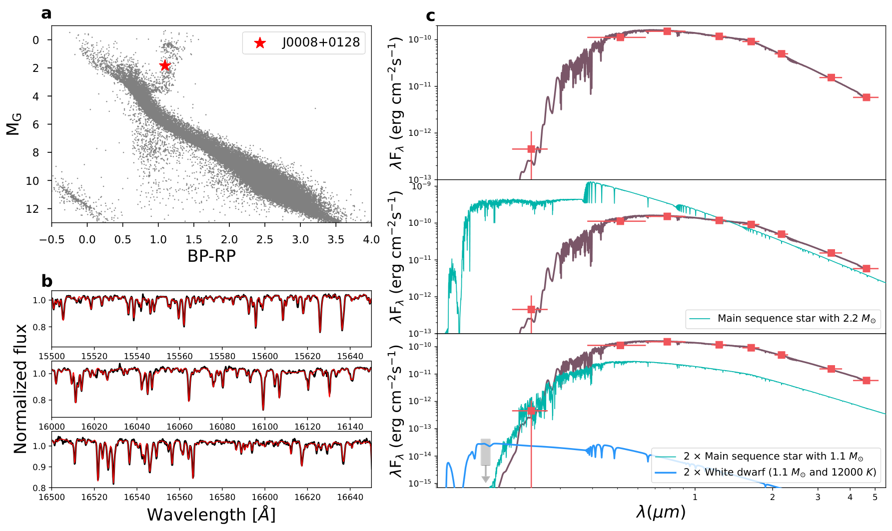
图注：J0008+0128 的光谱和测光。（a）可见星在赫罗图的位置，灰点为 Gaia EDR3 中按距离、星等和银纬筛出的邻近恒星。（b）APOGEE 谱为黑线，最佳模板为红线。（c）红方块为 GALEX、Gaia、2MASS 测光，棕线是 SED 拟合。青线分别示一颗 2.2 或两颗 1.1 太阳质量主序星的理论光谱，蓝线为两颗各 1.1 太阳质量、温度 12000 K 的白矮星叠加，灰区是 FUV 上限。
怎么看这张图：先看巨星能否由单星模板描述，再比较蓝端观测与假设的主序伴星。FUV 上限和白矮星曲线需按该例给定温度阅读。 展示巨星定型和明亮伴星的测光检验
来源与置信度：arXiv HTML；source verified；https://arxiv.org/html/2611.14998v1/Figure1.png
图 2
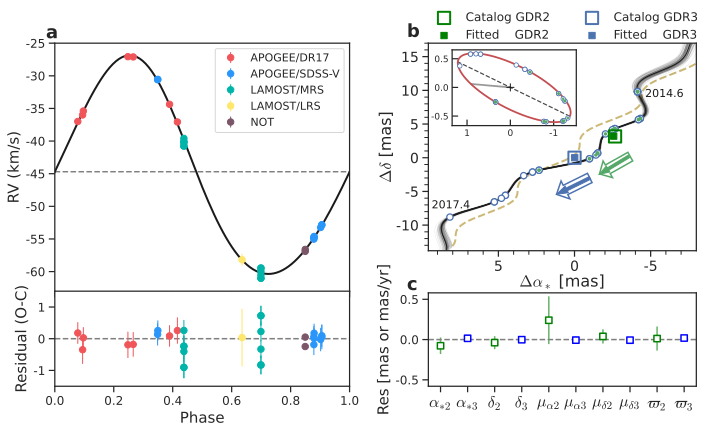
图注：（a）按 1217.19 天折叠的视向速度与拟合残差。（b）黑粗线为光心天空投影轨迹，灰色为 MCMC 代表轨迹。实心、空心圆为 GOST 预报的 DR2、DR3 视场交会时刻，空心方块和箭头为目录位置及自行，实心符号为模型；以 DR3 位置为参考。黄虚线只含视差和线性自行，插图给反射轨道、节点线、质心与近心方向。（c）两目录的五参数与拟合的残差。
怎么看这张图：折相速度是独立实测数据，轨道上的圆点是预测交会。先对照黄虚线和黑曲线，再看目录方块与（c）的拟合残差。 追踪速度和 Gaia 目录对同一轨道的联合约束
来源与置信度：arXiv HTML；source verified；https://arxiv.org/html/2611.14998v1/Figure2.svg
图 3
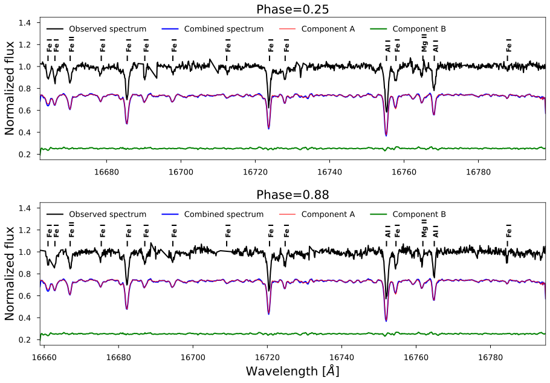
图注：在红移、蓝移较大的轨道相位做光谱分离。假定伴星是 $2.2\,M_\odot$ 的正常恒星。黑线为观测谱，红、绿为分离的成分，蓝线为合成谱。
怎么看这张图：红移和蓝移相位的吸收线分离最大，可比较观测是否出现伴星模板预测的第二组特征。结论适用于有可见光贡献的候选。 核验假定重主序伴星的谱线证据
来源与置信度：arXiv HTML；source verified；https://arxiv.org/html/2611.14998v1/Figure3.svg
图 S4
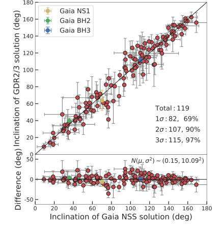
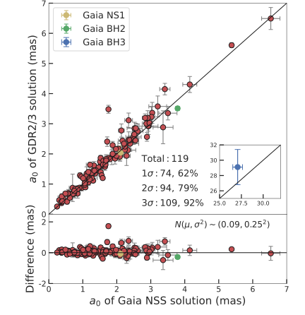
图注：GDR2/3 方法与 Gaia 非单星参考轨道的比较。左为倾角，右为光心半长轴 $a_0$，插图放大 Gaia BH3。三颗基准星联合 RV 与 GDR2/3，其余使用 GDR2/3 天体测量和 NSS 先验；Gaia BH3 的参考轨道来自历元测量。
怎么看这张图：读取一对一关系附近的残差散布，并确认样本的先验来自哪里。论文以倾角散布估计方法误差，不能把共享 NSS 信息当成独立历元。 说明如何估计额外倾角误差及其验证边界
来源与置信度：arXiv HTML；source verified；https://arxiv.org/html/2611.14998v1/Comp_inc_NSS_G23.svg；https://arxiv.org/html/2611.14998v1/Comp_a0_NSS_G23.svg
强相关工作
El-Badry 等的约 1.9 太阳质量中子星候选和 Gaia BH2 分别代表宽轨道暗伴星的较低质量与黑洞例子。二者都利用可见恒星的运动，但其轨道约束和质量跨度不同。J0008+0128 主要展示了目录间比较可与速度相互约束。
Price-Whelan 等的 The Joker 适合从不规则、稀疏的速度数据采样可能的开普勒轨道。Xiao 等用 Hipparcos、Gaia 和速度给长周期行星拟合三维轨道，说明目录参数对天体运动的吸收可用于不同质量尺度。排除剥离星还需结合实际大气和光谱，以防质量函数的可见星先验出错。
同一事件 / 同类源线索：
相似工作：
基础理论 / 方法工作：
相反观点 / 张力线索：
（未提供）
5. Fast Radio Burst Population Constrained by Source-Count Growth and Burst Clustering
- 来源：arXiv / astro-ph.HE
- 链接：https://arxiv.org/abs/2611.15099
- 作者：Shotaro Yamasaki, Tetsuya Hashimoto, Tomoki Wada, Tomotsugu Goto
- 公告 / 来源日期：2026-11-13
- 阅读层级：重点精读
- 评分：novelty 8/10，importance 8/10，relevance 8/10，final 9.00/10
- 推荐理由：CHIME Catalog 2随有效曝光计数、重复间隔与多重数联合限制，补足此前仅用样本比分的退化。
中文题目：只见一次的 FRB 会不会再爆？CHIME 五年样本把源数量、等待时间和复发次数放在一起检验
做了什么：作者从 CHIME/FRB 第二目录筛出 3950 个独立暴发，用波束和赤纬修正累计源数，再把同一巡天窗口用于模拟暴发检出。巡天时间基线约 300–44,000 小时内，只见一次和至少两次的源数分别以 $0.98\pm0.02$、$1.06\pm0.14$ 的对数斜率增长，两者之比约 $2.6^{+0.4}_{-0.6}\%$。这些是观测分类统计和基线时间，单个源实际只在短暂的过境窗口里被看见。
作者再用 77 个复发源的首两次检出间隔及多次检出率做检验。数据偏好覆盖预期检出数约 1 的宽速率分布，且爆发在过境内适度成簇，在数月到约一年尺度存在活动期。低速端变陡的全复发模型与加入真正一次性源的混合模型都能解释当前数据，现有基线还难看到同一源跨多个活动周期。
为什么重要：几乎恒定的复发与单次源数比，可以由低重复率、时段聚集、观测稀疏或真正一次性成分等不同机制产生。论文利用同一份目录的间隔和多次检出数据，排除了部分只靠源数增长会被接受的模型。它给出了现有数据能量化哪些检出统计，以及真正一次性源的比例为何仍难识别。
理论 / 观测 / 仪器方法价值：方法上的核心是用真实短过境和波束阈值做前向观测，再以相同选择检验一次、两次及多次检出。通过源级 bootstrap 保留重复暴发的相关性，可避免把密集计算的累计点视为独立。推断得到的是在 CHIME 条件下的可检出速率分布，其与源内禀活动率的联系还依赖距离、能量分布和阈值。
为什么应该关注：对高能瞬变的重复性调查，首两次检出间隔可以补足累计源数的盲区，第三次之后的多次检出率又能降低偶合关联对结论的影响。若要设计下一阶段观测，连续追踪可分辨过境内短间隔，稀疏但更长的随访则有机会看到再次活动；两种安排验证的是不同时间尺度。
展开详细解读：文章讲解、背景、理论、重点章节、图表与相关工作
文章详细讲解
目录到源数。 Cat2 覆盖 2018 年 9 月至 2023 年 9 月。先排除不适合种群统计的条目，要求信噪比大于 10、已测赤纬，再按事件编号去掉子暴发重复记录。同一个源第一次检出记为单次，到第二次改为复发。目录关联用于分组，进入当前分析的次数由筛选后事件重新算。
曝光与窗口。 CHIME 每个恒星日只有短过境能看到某个源，极区还可能经历上下两次过境。作者按赤纬和归一化波束灵敏度估有效曝光，并对累计数做倒曝光加权。由于不同基线来自同一组源，用源级重抽样估增长指标误差。
统计量的互补。 增长率优先约束可检出爆发速率的分布；首两次间隔里半日以内的比例反映过境内簇集，长间隔中位数约束更慢的活动时标；至少三次的源里五次以上的比例检验高次数尾部。它们来自同一目录，提供互补约束，不能当作独立的外部样本。
可识别范围。 典型平均曝光比例约 0.0022 时，约 $0.01$–$1.5$ hr$^{-1}$ 的可检出率能让源在巡天中经历一次到复发的转变。更低速率的源大多只贡献单次计数，既能用变陡低速尾解释，也能用真正一次性源解释。本文的活动期开关模型是对观测间隔的参数化，活动期是否周期重现仍待证据。
关键结果是怎么做出来的
建立样本。 5023 条原始条目经筛选和子暴发去重剩 3950 次暴发。按原目录关联有 81 个复发组、对应 874 次暴发；其中四组筛后只剩一次，按本文口径归单次。因此首两次间隔统计用 77 源，而源级 bootstrap 用全部 3157 源。152 天受标记剔除，作者按此前 100 小时局部增长率补该缺段，去掉补偿后增长指数变化不足 0.03。
测增长。 校正后的单次与复发源数对数斜率分别 $0.98\pm0.02$、$1.06\pm0.14$，两种计数的相对斜率 $1.08^{+0.14}_{-0.16}$，比值 $N_r/N_s=0.026^{+0.004}_{-0.006}$。分母为单次源，并非所有 FRB 源的无偏本征复发率。缩短一年时复发相关斜率约升 0.1，仍在作者的 $1\sigma$ 内。
用间隔排除过简单过程。 77 个复发源中仅 6 个首两次在同一过境，观测比例 0.078（95% 区间 0.04–0.16），中位间隔 101 天。定常泊松预测同过境比例约 0.002。定常 Weibull 可增加短间隔，但允许的宽速率模型仍给约 290–360 天的中位数，比观测长约三倍。
从多次检出排除极低率族。 至少三次的 52 源里 31 个至少五次，比例 0.60（95% 区间 0.46–0.72）。带活动期的极低预期检出数模型可缩短间隔，给五次及以上条件比例仍低于 $10^{-3}$。宽率模型给约 0.45–0.46，位于观测的约 $2\sigma$ 内，拟合仍可由未来更大样本检验。
两个难区分的种群。 指数约 2 的宽分布与代表性开关参数 $k=0.5$、$T_{\rm on}=400$ 天、占空比 0.05 可联合描述主要统计量。分段率分布与混合模型均允许。论文的混合族在不同先验截止下覆盖很宽的一次性贡献，未测得唯一的真实比例。
展开背景、理论、公式、模型和章节导读
背景知识
FRB 的单次或复发标签由可用观测定义。一个源几年来只被观测到一次，可能内禀低率、暴发低于阈值、活动期落在空档，或只发一次。仪器选择必须先于源类别推断。
过境巡天对赤纬高度不均匀。即便两源内禀相同，掠过波束的时长、位置与灵敏度也不同。拟合全部日历时间仍需使用每个源的实际短窗口。
若每个源都是同样低率泊松过程，单次检出约正比于曝光，两次检出约正比曝光平方。观测中两者近线性增长，要求考虑宽速率或短时成簇。源数本身不足以决定两者各贡献多少。
前两次检出间隔同时受真实等待时间、波束和巡天采样影响。只用短间隔可能把强聚集误认为高率，加入长间隔和多次检出提供了更有区分力的诊断。
基础理论 / 方法脉络
一个源在巡天中的预期检出数 $\mu$ 由可检出率与有效曝光决定。$\mu\ll1$ 的源多数未见，见到的多为一次；$\mu\gg1$ 的已见源多复发。样本对低速端的限制由这种区分度决定。
几何曝光和阈值选择同时改变检出率。若累积流量分布近欧氏 $\mathcal N(>F)\propto F^{-3/2}$，相对灵敏度 $B$ 会让达到门槛的比例按 $B^{3/2}$ 缩放。这是文内的有效曝光近似。
泊松过程在不连通窗口中仅依赖总曝光。Weibull 更新过程在 $k<1$ 时使短等待时间更常见，窗口的具体分布也进入检出概率。相同曝光总量可以给不同的复发分类。
若速率函数在观测覆盖内近幂律，把所有速率按时间基线重标，就能让两类源数出现类似指数。当分布对低率截断敏感时，单次计数会更多取决于截断。
快簇集只改变短等待，长活动期控制间隔在数月尺度的相关性。活动和静默轮换长于巡天时，资料主要约束这一轮持续多久，难测下一轮是否回来。
公式与推导
从波束到有效曝光。 原文式（1）。$T_j$ 为第 $j$ 段历时，$B_j$ 为相对波束灵敏度，$T_{\rm survey}$ 为作者按目录曝光标定的巡天有效总时标，$f_i$ 无量纲。
构造累计数。 原文式（2），将首次检出 $t_i$ 在基线 $\Delta t$ 内的源按其当前分类加总，实际每个源的累计权重是 $1/f_i$。$Q$ 为式（5），分母是单次源数。
窗口内预期次数。 原文式（6）、（7）。$r$ 为波束轴上可检出的暴发率（hr$^{-1}$），以小时乘有效曝光。$W$ 为实际观测窗口集合，暴发需落入窗口并通过波束选择。
先写泊松极限。 §III.1，泊松独立增量使选后计数只依赖 $\mu$。低率展开说明为什么单次增长近线性而复发近平方；该展开不可直接用于有簇集的模型。
对种群积分。 原文式（8）、（10）。$\phi(r)$ 为归一化率密度，$N_{\rm tot}$ 是源数，尖括号为各向同性赤纬平均。有限端点 $r_{\min},r_{\max}$ 对低速端外推很重要。
换元看增长斜率。 原文式（11），在宽率域泊松极限用 $r=\mu/(f\Delta t)$，$r^{-\alpha}dr\propto(f\Delta t)^{\alpha-1}\mu^{-\alpha}d\mu$。两个积分同时收敛要求 $1<\alpha<2$。在 $\alpha\ge2$ 不能沿用极限 $Q$，单次更依赖最低速率。
加短聚集和长活动期。 教学写法，匹配 §IV 的 Weibull 更新与开关均值。$k$ 为无量纲形状，$\lambda$ 为等待时间尺度，$\Gamma_{\rm E}$ 是欧拉 Gamma 函数。选 $\lambda$ 使开期平均速率 $r/d$，$d$ 为开期占空比。
把模拟落回可观测量。 原文式（13）、（14）。$C$ 为首两次检出间隔累积分布，半天界限区分同一过境。条件多次率以至少三次的源为分母，减少双事件偶合对比较的影响。
模型拟合 / 应用方法
数据选择和插补。 目录按适用标志、S/N、赤纬和事件编号过滤。被排除日按此前 100 小时局部增长率填累计数缺段，并检查不补时的变化。分组沿用 CHIME 关联，单次与复发阈值按通过筛选的暴发重算。
基线统计与不确定度。 每个 $\Delta t$ 用不重叠长度窗口取中位数，误差为区间间散布及泊松加曝光误差中的较大值。不同基线复用源，作者重抽样 3157 源 1000 次，每个复发源内全部爆发整体随源进入。先核源数，再检验率模型。
观测前向模拟。 蒙特卡洛在各赤纬过境窗口，按波束 $B^{3/2}$ 保留暴发。扫泊松与 Weibull、窄低率与宽率分布，再加活动开关。速率都是可被探测的速率，选择函数依赖阈值近似和分布。
间隔与重数。 用二项概率检查 $F_{\rm same}$、$F_{5|3}$，长间隔分布用 KS 检查。代表开关参数由同过境比例和大于一天的间隔似然获得。分段模型活动均值 68% 区间为 $400^{+190}_{-70}$ 天，混合模型 $400^{+270}_{-70}$ 天，均依赖开关时长的分布假设。
检验外推。 用低速端变陡或加入一次源两种方式补足单次事件，再检查多次尾。固定开关时长也可测试但需要约 1000–1400 天活动且拟合稍差。观察窗内活动周期常不完整，图 2 的长基线分叉属于预测。
重点章节 / 结果段落怎么读
- §II、图 1 与附录 A 看目录筛选、光束曝光和运营时间的区别。
- §III.1–III.3、图 2 对照低率极限、宽速率幂律和两类外推的可识别性。
- §IV.1–IV.3、图 3 看过境内台阶与数十到数百天间隔分别约束什么。
- §IV.4、表 2 核至少三次的条件样本与极低率被排除的原因。
- §V 与附录 D 核阈值造成的内禀率退化、开关假设、长期观测的模型预测。
关键图表与解读
图 1
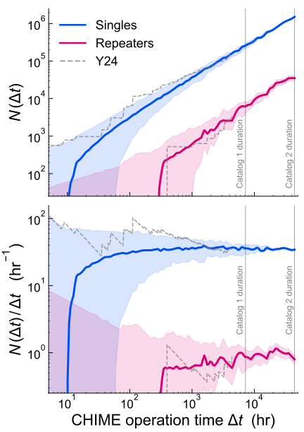
图注：上图为曝光修正后的单次源（蓝）与复发源（粉）数量随运营时间 $\Delta t$ 变化。实线为相同长度独立区间的中位数，阴影为误差。灰虚线为第一目录时期的单段结果，灰竖线标两目录时长。下图给各源数除以相应基线 $N/\Delta t$。
怎么看这张图：同时读上图的近似平行与下图的近水平。灰色第一目录单段短时波动较明显，不能代表五年样本的平均增长。 支持曝光校正后的两类源近线性增长
来源与置信度：arXiv HTML；source verified；https://arxiv.org/html/2611.15099v1/sc_measured.svg
图 2
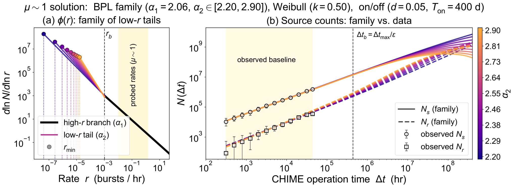
图注：分段幂律族。高速端指数 2.06，低速端指数 2.2–2.9，过境含波束选择，采用 $k=0.5$、平均开期 400 天及占空比 0.05。（a）黑线为共同高速分支，颜色为低速分支，圆点为各截断，阴影为可探速率域，竖线为转折。（b）实线单次、虚线复发，和数据比较并外推；竖线标近转折源开始复发的基线。
怎么看这张图：在左侧阴影外，各模型尾部仍可变化。右侧现有基线内都可逼近数据，长期外推的分歧来自低速端的不同假设。 区分当前直接约束的率与低速端外推
来源与置信度：arXiv HTML；source verified；https://arxiv.org/html/2611.15099v1/onoff_d0.05_T400_broken_pl_family_ad_weibull_k0.50_beam_teff_paper_N44.png
图 3
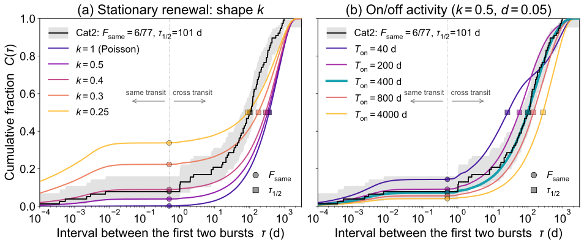
图注：77 个复发源首两次检出间隔的累积分布，黑线及灰带为目录与 95% 区间；彩线为分段率分布在波束加权过境下的预测。（a）定常 Weibull，$k=0.25$–1。（b）开关模型，$k=0.5$、占空比 0.05，平均开期 40–4000 天，粗线为 400 天。竖点线标半天，圆点为同过境比例，方块为中位间隔。
怎么看这张图：半天处的跳变与方块所在的百日尺度约束不同过程。先看定常模型能否同时对上两者，再比较开关模型的改进。 同时检验短时间簇集和较长活动窗口
来源与置信度：arXiv HTML；source verified；https://arxiv.org/html/2611.15099v1/first_repeat_intervals_models.svg
强相关工作
Yamasaki 等与 McGregor、Lorimer 曾从第一目录的源数随时间增长检验复发。本文用更长第二目录，并对多个不重叠时间窗取中位数，还增加首两次间隔及条件多次率，排除部分第一目录增长所容许的低率过程。
Oppermann 等用 Weibull 更新过程描述个别复发 FRB 的成簇等待时间。这里将它嵌进 CHIME 的离散过境和活动期开关。此前用第二目录做模拟推断的一次性/复发研究使用不同观测统计量和模型族，比较两者时要保留共同目录与先验差异。
同一事件 / 同类源线索：
相似工作：
- https://doi.org/10.1093/mnras/stad3844
- https://doi.org/10.3847/1538-4357/ad1184
- https://arxiv.org/abs/2610.18710
基础理论 / 方法工作：
相反观点 / 张力线索：
（未提供）
相关简报
1. LHAASO's Peanut source is a laboratory for studying magnetic fields in the Milky Way
- 来源：arXiv / astro-ph.HE
- 链接：https://arxiv.org/abs/2611.15473
- 作者：Maksim Kleimenov, Yuan Li, Gwenael Giacinti, Dmitri Semikoz
- 公告 / 来源日期：2026-11-13
- 阅读层级：相关简报
- 评分：novelty 7/10，importance 8/10，relevance 10/10，final 9.40/10
- 推荐理由：把LHAASO Peanut的偏移和宽度与扩散/近弹道磁场条件同检验，原初关联及湍流模型仍有退化。
中文题目：LHAASO「花生」的两套磁输运解释：磁瓶和视线投影怎样产生热点
问题、方法与结论：作者以毫秒脉冲星 J0218 为可能的电子源，计算电子沿银河系大尺度磁场输运并逆康普顿散射宇宙微波背景的辐射。近各向同性 Kolmogorov 湍流下，模拟用扩散与源附近的单侧注入、磁镜来产生长条，热点可由磁瓶俘获增强。各向异性的 Goldreich–Sridhar 湍流下，作者研究近弹道输运，视线与弯曲磁力线的几何重叠本身也可形成热点，容易得到单侧条带。
意义与贡献：同样的 25–100 TeV 与超过 100 TeV 长条图像，可以由局部电子密度增强或视线投影产生。本文给这两类解释分别设置传播、冷却和磁场方向约束，和 11 月 10 日的隐藏中央加速器模型构成不同的假设。
可借鉴之处：用不同能段的热点位置、横向宽度与软硬 X 射线对应体比较两类模型。宽度若随能量显著变化，磁瓶俘获与几何热点可给出不同趋势。模型中源距和观测方向须一并固定。
局限与关注点：现有 LHAASO 角分辨率和统计尚不能区分两种湍流。脉冲星供能是候选解释，电子注入与三维磁场未独立量出。用这一模型约束局部银河磁场时，需要保留这些前提。
图 6
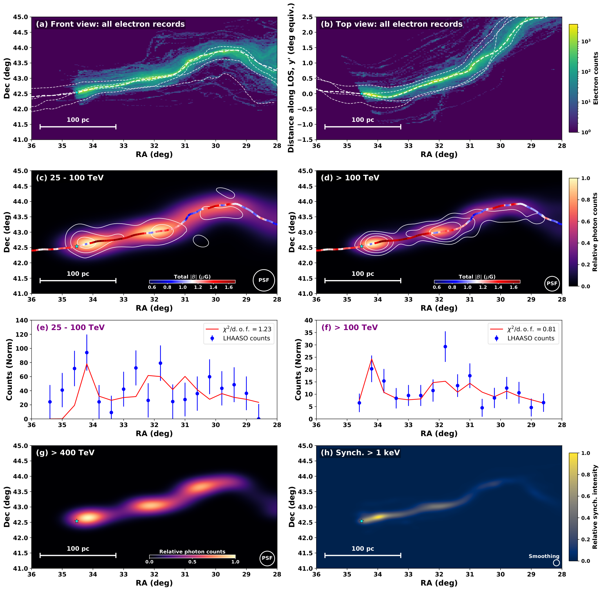
图注：扩散方案的一组代表性拟合投影，视线与大尺度场约成 $112^\circ$。（a、b）分别为天球及沿视线方向的电子计数投影，取对数色标。粗虚线是穿过源的主磁力线，青色星号为脉冲星。（c、d）为 25–100 TeV 与高于 100 TeV 的逆康普顿强度图，叠加白色 LHAASO 显著性轮廓和点扩散尺度。
怎么看这张图：先用两张电子图区分真实空间聚集与投影，再和两能段的伽马图比较。白色等高线是实测显著性，底色为模型强度。 连接输运参数、视线投影与观测形态
来源与置信度：arXiv HTML；source verified；https://arxiv.org/html/2611.15473v1/8panel_LOS_synchrotron_kol_mm.png
2. Revisiting the Neutrino Emission and Physical Parameter Constraints from Time-Resolved Spectra of Gamma-Ray Bursts
- 来源：arXiv / astro-ph.HE
- 链接：https://arxiv.org/abs/2611.14902
- 作者：Yang-Dong-Jun Ou, Hou-Jun Lü, Hao-Yu Yuan, Si-Xue Ren, Xue-Zhao Chang, Yan-Qiu Zhang, Shao-Lin Xiong, En-Wei Liang
- 公告 / 来源日期：2026-11-13
- 阅读层级：相关简报
- 评分：novelty 7/10，importance 7/10，relevance 10/10，final 9.05/10
- 推荐理由：将真实分时GRB靶谱与光强子中微子产额对比，揭示R和Γ不同区间可改变限制方向。
中文题目：伽马暴的逐时段光谱会改变预期中微子数和喷流约束
问题、方法与结论：作者用三次具有不同热成分比例的伽马暴及 GRB 221009A，比较由总时段光子谱一次计算中微子通量和先逐时段计算再相加。针对极亮的 GRB 221009A 采用 GECAM-C 光谱，并将预测通量折进 IceCube 14 年数据发布的有效面积。较小耗散半径和体洛伦兹因子区域，逐时段预测通常较低。两参数较大时趋势可反转，GRB 221009A 在所示参数区的事件期望可高约三倍。
意义与贡献：光强和谱形随时间演化，光强子反应率也随靶光子密度、能量和喷流几何变化。平均光子谱与平均中微子产额没有直接的线性对应，特别是几段辐射性质差异大的暴发。
可借鉴之处：用相同的半径、洛伦兹因子和质子注入假设分别通过逐时段和合并两条链，最后对同一有效面积积分。事件数之比可定位光谱平均真正改变约束的位置。
局限与关注点：结果是模型给出的期望事件数及零探测约束。高半径、高洛伦兹因子区的相对变化不等价于绝对事件数很大。具体幅度依赖光子分解、强子能量份额与耗散模型。
图 4
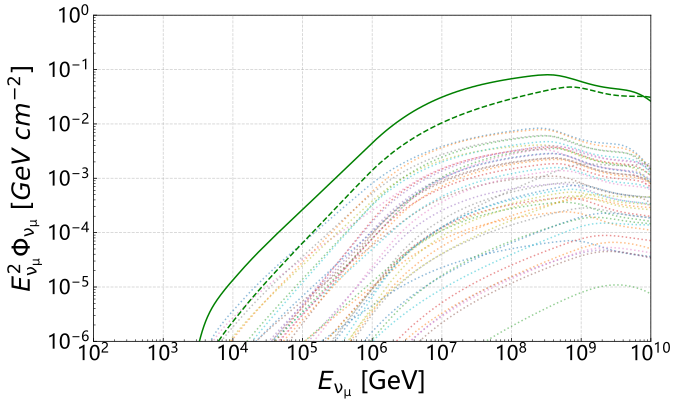
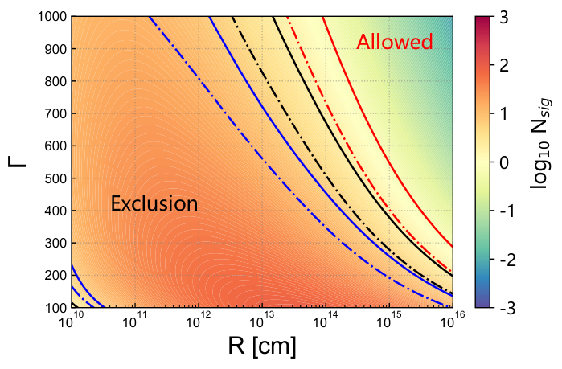
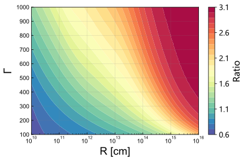
图注：GRB 221009A 的磁重联湍流耗散方案。（左）中微子能谱，虚线是总时段光子谱的结果，彩色点线为各时段，实线为时段结果之和。（中）耗散半径和体洛伦兹因子平面中的期望事例数及 90% 等值线，实线与点划线分别对应逐时段和总时段结果。（右）两种计算的期望事例数之比。
怎么看这张图：中图先判断绝对事件数落在哪个数量级，再对照右图。事件数之比可以在绝对预期很小的地方很大。 同一模型下展示平均方式如何改变非探测约束
来源与置信度：arXiv HTML；source verified；https://arxiv.org/html/2611.14902v1/f4a.svg；https://arxiv.org/html/2611.14902v1/f4b.png；https://arxiv.org/html/2611.14902v1/f4c.svg
3. Origin of the Fe K$α$ red excess in IC 4329A with XRISM and multi-wavelength spectroscopy
- 来源：arXiv / astro-ph.HE
- 链接：https://arxiv.org/abs/2611.15458
- 作者：Misaki Mizumoto, Yuya Nakatani, Satoshi Yamada, Yoshihiro Ueda, Taiki Kawamuro, Shoji Ogawa, Yuto Mochizuki, Kanta Fujiwara
- 公告 / 来源日期：2026-11-13
- 阅读层级：相关简报
- 评分：novelty 7/10，importance 8/10，relevance 9/10，final 9.05/10
- 推荐理由：XRISM、NuSTAR与光学红外宽线共同约束Fe K红翼三解，提供直接诊断但三个X射线模型等好。
中文题目：XRISM 把 IC 4329A 的铁线拆开：宽线区、盘反射和吸收仍有退化
问题、方法与结论：作者联合 XRISM Resolve、同时的 NuSTAR 和近同时的光学、近红外谱，研究塞弗特 1 星系 IC 4329A。Resolve 把铁 Kα 分成窄核和带红侧过量的宽分量。红移 X 射线宽线区、相对论盘反射、以及宽线区叠加轻度电离吸收三种解释在 X 射线拟合上都可行。光学 Hβ 和近红外 Paβ 宽线呈约 640–1050 千米每秒的红移。以这些线的速度结构作约束，宽线区与盘反射的混合模型也能拟合。
意义与贡献：仪器分辨率足以拆出更多成分，物理归属仍可能受不同谱形的退化限制。多波段速度信息提供了和 X 射线宽铁线不同的证据，可缩小模型空间。
可借鉴之处：可先固定高能连续谱与窄线核，再将光学和近红外宽线速度作为条件，分别试验 X 射线宽线区、吸收和盘反射。拟合优度、同速假设及线宽到半径的换算需各自说明。
局限与关注点：光学近红外线和铁线共享运动结构是混合模型的假设。所估宽线区半径约 12–22 光日，仍依赖模型和速度解释。仅靠拟合相容性无法证明红侧过量中有多少来自盘反射。
图 6
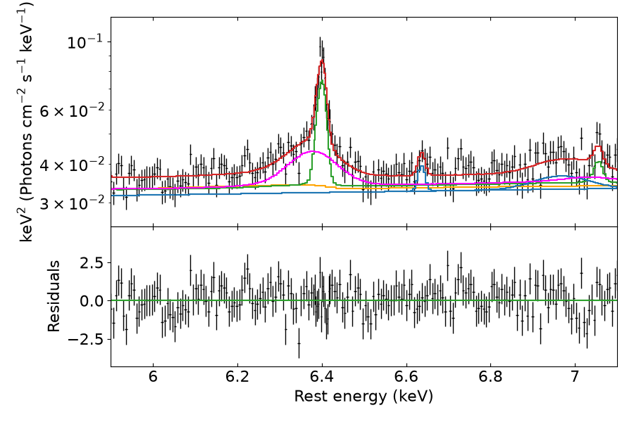
图注：IC 4329A 的 X 射线能谱及其混合模型拟合。画法沿用图 3 上面板，品红色为 X 射线宽线区，橙色为盘反射。
怎么看这张图：对照铁 K 带红侧处两种分量如何叠加。图显示加入共同速度假设后可以拟合，成分分解依然是模型结果。 展示跨波段速度信息与盘反射的联合解释
来源与置信度：arXiv HTML；source verified；https://arxiv.org/html/2611.15458v1/hybrid.png
4. New Physics in Ultra-High-Energy Neutrino Flavor
- 来源：arXiv / astro-ph.HE
- 链接：https://arxiv.org/abs/2611.14624
- 作者：Samiur R. Mir, Carlos A. Argüelles, Vedran Brdar
- 公告 / 来源日期：2026-11-13
- 阅读层级：相关简报
- 评分：novelty 8/10，importance 7/10，relevance 9/10，final 9.00/10
- 推荐理由：将射电冰阵列和掠地tau联合后的高能味比转为LIV灵敏度，优势依赖未来响应、事件与谱先验。
中文题目：超高能中微子的三味测量：下一代阵列能检验多弱的洛伦兹破缺
问题、方法与结论：作者对 100 PeV–10 EeV 的中微子做灵敏度预测。标准真空振荡项随能量升高而变弱，而高维洛伦兹破缺项随能量增大。作者逐次引入一个各向同性、实的破缺系数，用 SimProp 模拟宇宙线在背景光场中产生的中微子，按生成红移和能量传播后计算地球三味比例，再与冰内无线电和掠地 τ 通道的预期误差比较。中等通量、GRAND50k 配置下，部分八维系数的 95% 预期灵敏度约为 $10^{-72}$ GeV$^{-4}$。
意义与贡献：掠地 τ 事例约束 τ 味，冰内射电可提供不同的事例形态和味信息。二者在味三角图上的允许区方向不同。对最有利的电子—τ 耦合，联合相对仅掠地通道最多改善约十倍。相对现有限制最高约二十个数量级的改善指论文比较的最强八维系数。
可借鉴之处：可用同样的流程把新的传播模型映射到味三角图，再结合仪器味识别能力评估增益。较大 GRAND 阵列已能通过掠地通道约束许多方向，因此应逐个算符比较增加冰内通道的边际贡献。
局限与关注点：结果依赖未来曝光、三种宇宙成因通量基准与源味模型。主限值逐个打开一个系数，固定真空混合参数。允许多个破缺项同时存在时可以产生退化，投影灵敏度也不能当作已有测量上限。原文还检查不同源味组成下的多系数扫描，允许范围随源条件改变。
图 2
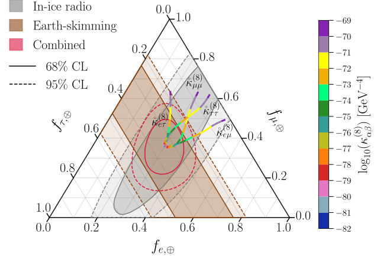
图注：中等通量下四种八维洛伦兹破缺味组合在地球味三角图上的轨迹，色标为对应系数。红线为 GRAND50k 等全部实验联合的 68% 与 95% 预测轮廓，灰色为冰内无线电，棕色为掠地 τ 通道。
怎么看这张图：沿各彩色轨迹找到它与红轮廓的交点。不同方向显示联合通道增益与算符的味结构有关。 展示如何由预期味测量转换成逐系数灵敏度。
来源与置信度：arXiv HTML；source verified；https://arxiv.org/html/2611.14624v1/ternary_combined_d8_mid_50k.svg
5. Revisiting the distance to 4U 1543-475 through X-ray dust-scattering rings
- 来源：arXiv / astro-ph.HE
- 链接：https://arxiv.org/abs/2611.14643
- 作者：B. Vaia, G. Mastroserio, T. Darie, A. Tiengo
- 公告 / 来源日期：2026-11-13
- 阅读层级：相关简报
- 评分：novelty 8/10，importance 7/10，relevance 9/10，final 9.00/10
- 推荐理由：两次旧爆发的独立尘埃散射环给4U 1543新几何距离，直接影响伴星、喷流和自旋估计。
中文题目：两次尘埃回声把黑洞双星 4U 1543−475 的距离修正到约 4.6 千秒差距
问题、方法与结论：作者在 XMM-Newton 与 ROSAT 档案中测到两次爆发后的软 X 射线散射环。近视线方向上，绕经尘层的光子比直达爆发光晚到。结合环半径、峰值到观测的时延和 StarHorse 恒星消光给出的尘层距离，可反推出源的距离。2002 年的 9.98 角分环配对 3.26 千秒差距尘层，得到 $4.6\pm0.2$ kpc。1992 年的 27.2 角分环配对 1.84 千秒差距尘层，得到 $4\pm1$ kpc，两者在误差内一致。
意义与贡献：新距离低于文献常用的 7.5 kpc，也和独立 Gaia 估计相容。较近的距离让低质量延展水平支伴星比原采用的主序星模型更合适。源光度随距离平方改变，因此 2021 年爆发的爱丁顿比需要与黑洞质量一起重新估计。若暂固定旧质量，较短距离会使推断的峰值显著下降；采用低质量伴星重新估计系统质量后，仍可能允许超爱丁顿。
可借鉴之处：可用旧观测中的环形余量、同次暴发的软 X 射线峰时和视线消光阶跃做几何测距。先排除背景、点源响应和较宽的不确定环，再用不同事件、不同尘层与视差交叉检验候选关联。作者用不同距离分箱宽度和偏移做自助重采样，检查两处尘层峰的位置是否稳定。
局限与关注点：1992 年缺连续软带监测，以硬带峰代替照亮尘层的时刻。最精确结果也依赖 2002 年环与尘层配对。文章未重测动力学质量，距离与质量对连续谱自旋的影响可相反，不能仅凭测距修订确定新自旋。
图 2
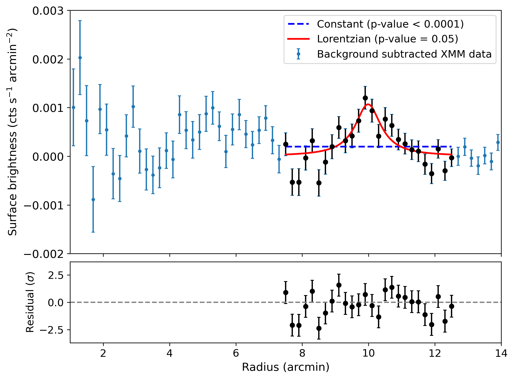
图注：XMM-Newton MOS2 的 0.5–2 keV 背景扣除径向表面亮度，蓝点来自 270°–360° 扇区，黑点为拟合的 7.5–12.5 角分区间。蓝虚线为无环常数模型，红实线为洛伦兹拟合，下排为按统计误差归一的残差。
怎么看这张图：红线中心给出约 10 角分的测距输入。较内侧宽余量的位置不稳定，作者未将它纳入几何估计。 原图显示最有约束力的一次散射环半径测量。
来源与置信度：arXiv HTML；source verified；https://arxiv.org/html/2611.14643v1/radialprofile_xmm.png
6. Natal Kicks of Compact Binaries: II. Neutron-star and black-hole systems share similar kick distributions
- 来源：arXiv / astro-ph.HE
- 链接：https://arxiv.org/abs/2611.14680
- 作者：Cordelia Dashwood Brown, Poshak Gandhi, Christian Knigge, Yue Zhao, Phil Charles, Katelyn Breivik, Pornisara Nuchvanichakul, Siddharth Malu
- 公告 / 来源日期：2026-11-13
- 阅读层级：相关简报
- 评分：novelty 8/10，importance 7/10，relevance 9/10，final 9.00/10
- 推荐理由：用68个X射线双星合并反演出生踢速，以受选择样本检验BH/NS分布，未证实两种物理机制相同。
中文题目：黑洞与中子星的出生踢速：双星样本中尚无法区分两组分布
问题、方法与结论：作者用 COSMIC 演化大量假设前身双星，模拟超新星抛质及新生致密星的速度冲量，再选择能复现当前质量、轨道和三维运动的演化路径。正文最终成功模拟 66 个系统，包括 18 个黑洞、33 个中子星 X 射线双星和 15 个中子星脉冲星双星。由每个系统的速度分布反复采样，再作两样本检验与分层 Gamma 拟合。合并样本平均踢速约 128 km/s、标准差约 117 km/s。黑洞与中子星目前的分布差异没有统计显著性。
意义与贡献：对照同一演化框架后，两类系统仍都有低踢速和高踢速候选，部分黑洞需超过 100 km/s 的新生冲量。数据对所有黑洞踢速都很小的简单处方提出约束，也为检验引力波双星种群的速度先验提供经验基准。论文还用后验预测检查了这一两参数近似的适用性。
可借鉴之处：可复用逐个系统的完整后验，并在种群拟合时扣除原始速度先验的影响。将候选成员分类、视差与系统运动的不确定性传播到分布，再用后验预测和排除争议源的对照检查结论。
局限与关注点：样本只含可测三维运动且存活的双星，常见出生地点与各向同性踢速是模型假设。两组分布相容仍允许较弱的真实差异，也未证实踢速与黑洞质量成反比。论文摘要说模拟 68 个，本文引用正文的 66 个成功匹配样本。
图 4
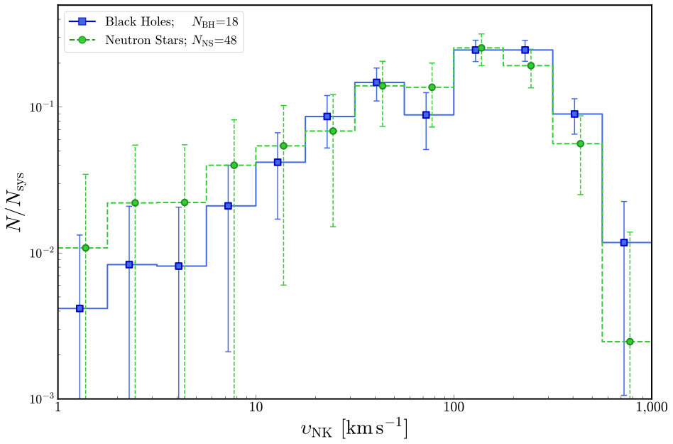
图注：黑洞和中子星双星推断的出生踢速分布。每轮从每个源的速度后验各取一个值，得到一组速度直方图。曲线及范围汇总各轮的均值和标准差，蓝实线为黑洞，绿虚线为中子星。
怎么看这张图：两组宽峰和尾部明显重叠，阴影来自单源后验采样。它没有涵盖双星存活与探测选择造成的全部误差。 直接显示论文比较的两类种群分布。
来源与置信度：arXiv HTML；source verified；https://arxiv.org/html/2611.14680v1/VNK_MeanHist.svg
7. Polarized transport in a Thomson slab: Stokes recursion, asymptotic eigenmodes, and Comptonization applications
- 来源：arXiv / astro-ph.HE
- 链接：https://arxiv.org/abs/2611.16434
- 作者：Haichao Xu
- 公告 / 来源日期：2026-11-13
- 阅读层级：相关简报
- 评分：novelty 8/10，importance 7/10，relevance 9/10，final 9.00/10
- 推荐理由：偏振传输Stokes递推连接本征模态与IXPE联合拟合，能谱分离近似限于冷、厚冕。
中文题目：汤姆孙平板中的偏振输运：逐阶散射模型与中子星冕层检验
问题、方法与结论：作者对有限光深、轴对称的电子平板逐阶追踪散射，用两个随深度变化的系数精确表示散射后的线偏振场，同时计算逃逸概率和偏振方向。高阶散射由主特征模控制，归一化角分布和偏振逐渐失去对种子光源的依赖。再将各阶结果与角平均热康普顿能量核组合，用完整偏振蒙特卡洛检验。能谱强度的适用范围较宽，偏振在低电子温度、高光深时更可靠。作者将模型用于中子星双星 4U 1624−49 的非吸收低谷时段数据。
意义与贡献：该模型把散射次数、逃逸角度和偏振放在同一计算里。软态中由多次散射形成的光谱分量可与 IXPE 的线偏振数据联合检验。用 NuSTAR、NICER 强度与 IXPE 的 $I,Q,U$ 拟合时，低反射和高反射两组解都可接受，表明几何仍有退化。
可借鉴之处：可先在拟合参数范围内比较递推与完整蒙特卡洛，再把单次或少量散射、温热电子、光深较薄的情况分开。拟合可同时允许未偏振分量稀释信号，避免把总偏振度直接换算为倾角。
局限与关注点：精确闭合适用于轴对称汤姆孙角输运。能量重建近似分离能量与角度，较热介质的偏振偏差会增大。拟合只让平板贡献 $Q,U$，高反射解的倾角抵达 87° 网格边界，光深上限也未约束。现有数据只能支持盘上平板冕的可行性。
图 13
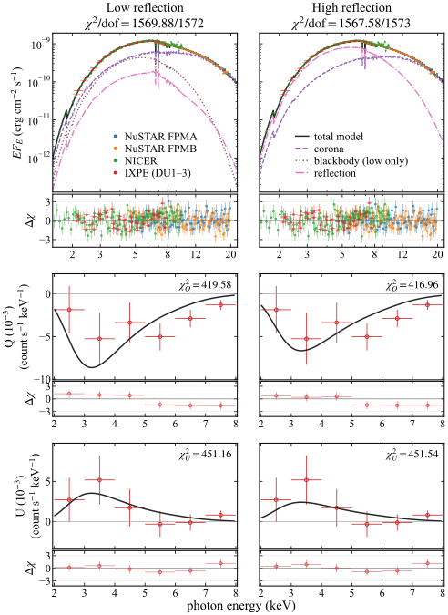
图注：4U 1624−49 非谷段的联合谱和偏振拟合。左右为低、高反射解。上排为 NuSTAR、NICER 和 IXPE 的展开强度谱及总模型、冕康普顿化、直接黑体和反射分量，高反射解的直接黑体可忽略。中、下排为 IXPE 的 Stokes Q 和 U 谱，绘图合并三探测器单元。
怎么看这张图：先比较上排的反射与黑体分解，再看同一数据能否区分中、下排的偏振曲线。两种解都可接受，不能从图中选出唯一倾角。 展示平板模型的实际联合拟合与谱分解退化。
来源与置信度：arXiv HTML；source verified；https://arxiv.org/html/2611.16434v1/western_iqu_low_high_reflection.svg
8. Double Blandford: Resistive GRMHD simulations of accreting black holes simultaneously launch winds and jets
- 来源：arXiv / astro-ph.HE
- 链接：https://arxiv.org/abs/2611.16641
- 作者：J. Speicher, O. Porth, N. Degenaar
- 公告 / 来源日期：2026-11-13
- 阅读层级：相关简报
- 评分：novelty 8/10，importance 7/10，relevance 9/10，final 9.00/10
- 推荐理由：电阻GRMHD六组薄盘区分BZ喷流和BP风、场结构和力投影，计算初态影响推广。
中文题目：黑洞薄盘同时发出喷流与盘风：有电阻磁流体模拟中的能量和载质分工
问题、方法与结论：作者用 BHAC 做六组二维轴对称广义相对论磁流体模拟。冷却处方维持薄盘，有限电阻让气体和磁通可相对运动。两组进入磁阻塞状态，其余是标准磁通态。模拟都同时形成视界供能的 Blandford–Znajek 喷流和盘磁场驱动的外流。拟合至约 200 个引力半径时，喷流宽度对高度的幂指数为 0.52–0.64。在正向自旋 0.9375 的设置中，喷流功率约为盘风的三倍或以上。
意义与贡献：磁化度较高的一层含有潜在高速外流，能量全转为整体动能时的洛伦兹因子可达约 25，但没有可测的盘物质装载。较外、低磁化部分速度更慢，磁力与离心加速的组合能从盘中移走质量。快速低密度成分与主载质风因此可共存。沿两条代表磁力线的受力分解发现，快速区在盘面上方受到磁压迫，较慢分支的磁力则在盘表改变符号，有利于物质脱离。
可借鉴之处：可分别用磁力线锚点、能流和质量通量定义喷流与风。按电磁、粒子和焓通量拆开径向功率，再核对正能非束缚区，能避免用几何锥角直接假定外流驱动机制。
局限与关注点：轴对称、预设大尺度场与冷却限制了外推。高速低密度区易触发数值密度下限，终端洛伦兹因子是能量预算而非实际积分到无穷远的测量。软态双星常见射电喷流减弱，文中薄盘计算未复现这一现象。
图 14
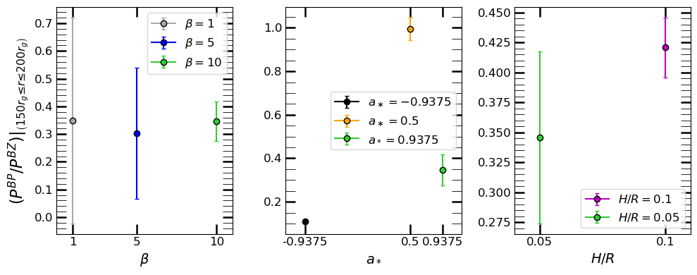
图注：盘风与喷流功率之比。取模拟最后一段时间平均的净能流，并在 150–200 个引力半径范围取平均。三面板从左到右改变初始磁压比、黑洞自旋和盘厚度。误差棒标出径向窗口的比较结果。
怎么看这张图：比较中间自旋面板的变化与其余两个面板，读比值时保留磁通不同及厚度处方，勿把单组比值当普适定律。 直接检验所比较六组模型的风和喷流能量分配。
来源与置信度：arXiv HTML；source verified；https://arxiv.org/html/2611.16641v1/pictures/jetWindComparison.png
9. Cosmic Ray Reacceleration and Gamma-Ray Emission via the Cloud-Wind Interaction in the Galactic Halo
- 来源：arXiv / astro-ph.HE
- 链接：https://arxiv.org/abs/2611.15120
- 作者：Ryohei Inamoto, Jiro Shimoda, Katsuaki Asano
- 公告 / 来源日期：2026-11-13
- 阅读层级：相关简报
- 评分：novelty 7/10，importance 7/10，relevance 9/10，final 8.70/10
- 推荐理由：二维风云与动量输运使宇宙线压强反馈、谱硬化及GeV亮度可比较，不能由单云模型确定Fermi泡起源。
中文题目：银河风掠过冷云：压缩再加速能让强子伽马谱变硬多少
问题、方法与结论：作者用二维轴对称流体模拟一股相对冷云速度 300 km/s 的热银河风，耦合依赖动量的宇宙线输运。绕云流形成弓激波，压缩能使原有质子谱变硬，质子再扩散入云，和致密气体碰撞产生伽马射线。初始宇宙线压强仅为气体的 1% 时，模型在 1–3.16 GeV 的光子指数由 2.66 降至 2.29；两种压强相当时，宇宙线反馈减弱压缩，指数只降至 2.57，但绝对通量更高。
意义与贡献：谱变硬和总亮度由不同过程控制。弱宇宙线反馈让局部压缩更强，高压强则提高了可供碰撞的质子数量。模拟云团亮区在 1–10 GeV 的表面亮度约 $10^{-9}$–$10^{-8}$ erg cm$^{-2}$ s$^{-1}$ sr$^{-1}$。投影覆盖率约 0.1 时，平均亮度可能接近费米泡。
可借鉴之处：可复用风速、宇宙线压强和扩散系数的分开扫参，同时输出压缩区的质子谱与云内伽马发射图。亮度比较要区分局部峰值和泡尺度面平均，还要用云团气体分布约束填充因子。模拟用同一云团两种初始压强，在同一投影区域取谱，有助于隔离动力学反馈。若要检验伽马成图，可继续把能量依赖的质子扩散和气体柱密度同时与观测比较。
局限与关注点：文章只比较一个云团的两个压强设定，云质量约 $2.3\times10^4$ 个太阳质量，高于典型观测云。扩散系数固定空间分布，未纳入剪切加速及多云三维结构。结果支持一种费米泡辐射贡献渠道，尚无全泡形态与光谱联合拟合。
图 13
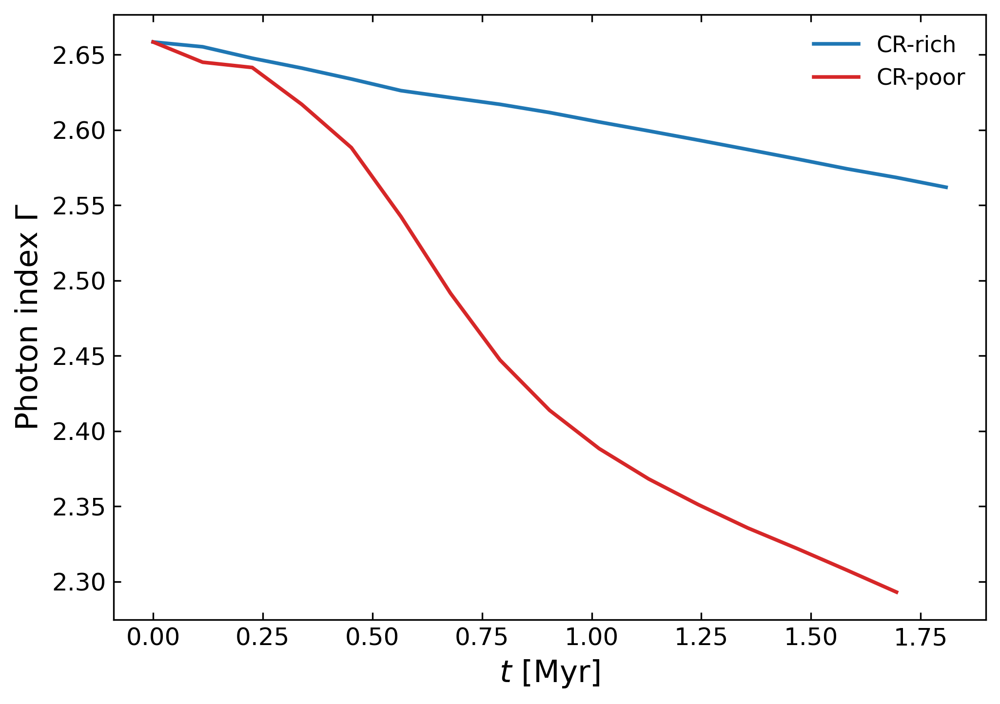
图注：从 1–3.16 GeV 模拟伽马能谱拟合得到的光子指数随时间的变化。红、蓝线分别为初始宇宙线压强低和高的模拟。指数降低表示光谱变硬。
怎么看这张图：两条曲线从近似相同的初始指数分离，红线硬化更强。相对亮度需另看强子发射图，不能由指数直接推出。 量化压缩反馈对费米泡相关谱形的影响。
来源与置信度：arXiv HTML；source verified；https://arxiv.org/html/2611.15120v1/Fig11_gamma_photon_index_evolution.png
10. On the MeV Nuclear De-excitation Line Emission from the Vela Supernova Remnant Region
- 来源：arXiv / astro-ph.HE
- 链接：https://arxiv.org/abs/2611.15226
- 作者：Y-Z. Shen, B. Liu, Y. Chen
- 公告 / 来源日期：2026-11-13
- 阅读层级：相关简报
- 评分：novelty 7/10，importance 7/10，relevance 9/10，final 8.70/10
- 推荐理由：分遗迹核退激发线和本地连续谱预测，给未来MeV探测多通道诊断；低能质子谱不确定范围大。
中文题目：Vela 遗迹群的 MeV 核退激线能检验低能宇宙线吗？
问题、方法与结论：作者用 TALYS 核反应代码和实验核能级资料计算 Vela、Vela Jr. 与 Puppis A 的 MeV 核退激线。先以强子起源假设下的 GeV–TeV 数据限制高能质子，再外推多种低能质子谱，并同时计入加速轻核撞靶和加速重核撞环境轻核。三者中 Vela 给出的线通量最大。以 1.63 MeV 的氖线为例，不同质子谱给出的通量从每平方厘米每秒约十的负十次方到百万分之一光子。
意义与贡献：电荷粒子的低能部分受太阳调制和传播损失影响，很难直接从地球附近测量。碳、氧和氖的特征线为遗迹区提供独立的能段探针，能测试高能连续谱以下的粒子分布。
可借鉴之处：可把不同遗迹、银河弥散背景及 Vela X 脉冲星风云分别做空间和能谱模板，再与 MeV 仪器的能量分辨率和视场结合估算线的检出条件。
局限与关注点：这些通量是模型预测。GeV–TeV 的强子解释、低能谱外推、靶成分与延展源背景共同决定结果。跨多个数量级的范围比单一最佳曲线更能体现观测前的不确定性。
图 3
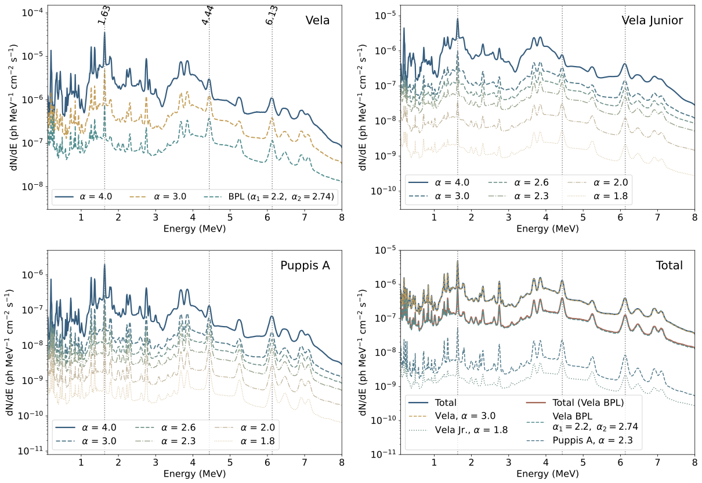
图注：Vela、Vela Jr. 和 Puppis A 三个遗迹在不同质子谱指数下的 MeV 核退激线微分谱，分别列在前三个面板。Vela 面板还包含 10 GeV 折断的质子谱。末面板给出三个遗迹的合计和替代折断情景，实线为总谱，虚线或点线为各源分量。
怎么看这张图：先看各源线通量的量级，再比较 Vela 不同低能外推让强线幅度移动多远。各分量应与实际天空孔径和弥散背景共同拟合。 显示主要候选目标及低能谱不确定性
来源与置信度：arXiv HTML；source verified；https://arxiv.org/html/2611.15226v1/all_emission_unsmoothed.svg
11. 3D radiative transfer of K-series lines of He-like ions with SKIRT
- 来源：arXiv / astro-ph.HE
- 链接：https://arxiv.org/abs/2611.16320
- 作者：N. Sameshima, A. Lauwers, B. Vander Meulen, M. Tsujimoto, L.-Y. Gu, M. Baes, P. Camps, D. Miura
- 公告 / 来源日期：2026-11-13
- 阅读层级：相关简报
- 评分：novelty 7/10，importance 8/10，relevance 8/10，final 8.70/10
- 推荐理由：SKIRT实现类氦K系散射/复合/内壳电离与交叉验证，可实用于XRISM多相谱解读。
中文题目：SKIRT 加入类氦 X 射线谱线，区分散射、复合和内壳层电离
问题、方法与结论：作者为三维蒙特卡洛辐射转移程序 SKIRT 加入原子序数 2–30 的类氦离子 K 系谱线。代码逐跃迁处理共振散射和辐射复合，并加入类锂离子内壳层电离形成类氦谱线的通道。用铁的 He α 四线比较不同柱密度及外流，发现以散射为主的 w、y 线会因光学厚度变形并在流动情景出现 P Cygni 轮廓，复合及电离更重要的 x、z 线表现不同。
意义与贡献：XRISM 能分辨部分复杂线形，而由发射、吸收和散射叠加而成的谱不宜只用孤立高斯描述。各跃迁响应不同，可联合作为检验视线和外流几何的诊断。
可借鉴之处：建模时可先对同一组等离子体用 SKIRT 与 Cloudy 核对散射和复合强度，再逐项开启内壳层过程与速度场。偏振用各跃迁的散射矩阵计算，便于和未来高谱分辨偏振诊断衔接。
局限与关注点：这是代码实现与验证工作。线强与形态会受光致电离平衡、速度场和气体几何影响。用于单个源时仍需加仪器响应和独立的吸收、背景及多区分量。
图 4
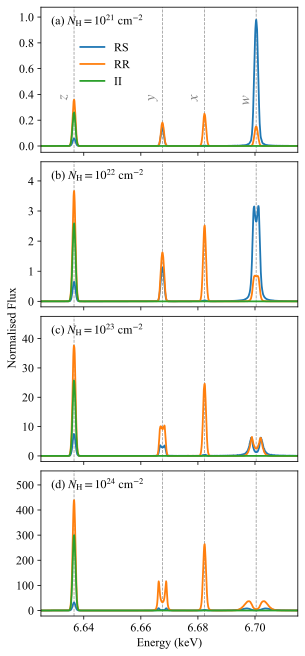
图注：SKIRT 计算的铁 He $\alpha$ 线形。（a）–（d）依次采用 $10^{21}$、$10^{22}$、$10^{23}$、$10^{24}\,\mathrm{cm^{-2}}$ 柱密度。蓝、橙、绿分别标记初始相互作用为共振散射、辐射复合及内壳层电离的贡献，强度以最低柱密度时 $w$ 线的共振散射贡献归一。
怎么看这张图：先定位四个跃迁，再沿各面板看柱密度增加时哪条线被散射改变最多。颜色区分最初产生光子的物理过程。 直接对照多个物理过程随柱密度改变的线形
来源与置信度：arXiv HTML；source verified；https://arxiv.org/html/2611.16320v1/f04.svg
12. Spins do not add: why rotating stars do not help spin-up black holes in binaries
- 来源：arXiv / astro-ph.HE
- 链接：https://arxiv.org/abs/2611.14610
- 作者：Filippo Camilloni, Konrad Topolski, Keneth Miler, Luciano Rezzolla
- 公告 / 来源日期：2026-11-13
- 阅读层级：相关简报
- 评分：novelty 8/10，importance 7/10，relevance 8/10，final 8.65/10
- 推荐理由：黑洞中子星并合模拟发现抛射物角动量可逆转末态自旋趋势，适用可潮汐撕裂情形。
中文题目：潮汐撕裂的黑洞—中子星并合中，转得更快的中子星可留下自旋更慢的黑洞
问题、方法与结论：作者用数值相对论模拟低质量黑洞—中子星双星，改变质量比和与轨道角动量同向的中子星自旋。计算初始黑洞无自旋、质量比采用中子星与黑洞质量之比且不低于 0.4。在模拟覆盖范围内，同质量比的中子星自旋越高，遗迹黑洞最终自旋反而越低。较快转动令中子星更易遭潮汐撕裂。额外角动量更多由动力学喷出物和遗迹盘携带，一些算例的喷出物角动量损失可比引力波通道。
意义与贡献：估计并合后黑洞自旋不能简单把两颗星的初始自旋和轨道角动量相加。这个趋势提供一个区分发生潮汐撕裂的黑洞—中子星系统与双黑洞并合的动力学信号。
可借鉴之处：比较模拟时，可逐项记录遗迹黑洞、盘、动力学喷出物和引力波的角动量。对相同质量比而自旋不同的系统，用守恒账目检查最终自旋差来自哪个通道。
局限与关注点：趋势由特定质量比、初始黑洞无自旋和同向中子星自旋的算例给出。倾斜自旋、不同状态方程或没有明显撕裂时，需要重新检验，不宜直接把拟合面外推。
图 2
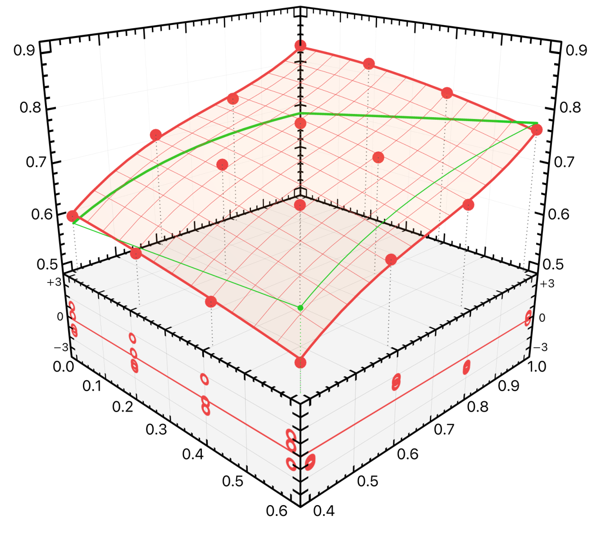
图注：并合后黑洞自旋对质量比和中子星自旋的依赖。红实点为表 1 的模拟结果，曲面为多项式拟合，粗、细绿线为双黑洞并合的参考趋势。下图给出模拟点相对拟合的偏差，约不超过 2%。
怎么看这张图：固定质量比沿中子星自旋方向看红点及曲面，再对照绿色参考趋势。下图显示插值质量，不能用于判断模拟区间以外的适用性。 直接对比双黑洞与发生撕裂的黑洞—中子星并合趋势
来源与置信度：arXiv HTML；source verified；https://arxiv.org/html/2611.14610v1/Fig_3D_plot.png
13. General Relativistic and Non-Inertial Effects on Magnetic Reconnection Rates
- 来源：arXiv / astro-ph.HE
- 链接：https://arxiv.org/abs/2611.14740
- 作者：Jake Willard, Yi-Hsin Liu
- 公告 / 来源日期：2026-11-13
- 阅读层级：相关简报
- 评分：novelty 8/10，importance 7/10，relevance 8/10，final 8.65/10
- 推荐理由：构造坐标及参考系无关重联率，给出可检验曲率尺度；目前验证以简化流体构型为主。
中文题目：如何在弯曲时空中定义磁重联率？区分坐标表象和真实潮汐效应
问题、方法与结论：作者从场面几何和磁通变化定义重联率，在假定二维对称的体系中给出不依赖坐标选择的定义。随后把扩散区外部的中尺度磁场与流动纳入稳态模型，考察局部加速、潮汐引起的计时和三维形状变化，以及重联平面弯曲导致的有效磁张力。静态球对称引力源和零角动量吸积的算例显示，重联率增减的方向取决于重联面取向，径向流出给出最强的提升。
意义与贡献：紧致天体附近的坐标时间和空间长度容易混入表观修正。先定义与局部几何对应的测量，再比较物理时间与长度，才能将实际曲率效应放进可检验的模拟。
可借鉴之处：可在局域正交参考系控制磁化、重联尺度与方向，比较相同等离子体参数在不同潮汐张量下的率。把扩散区外部的约束也写清，避免把速率全部归给局部电阻。
局限与关注点：定量结果依赖稳态、近似对称和简化引力模型。重联层尺度远小于曲率尺度时修正很弱。旋转黑洞、快速时间变化或三维不稳定性不能直接沿用算例的符号与幅度。
图 13
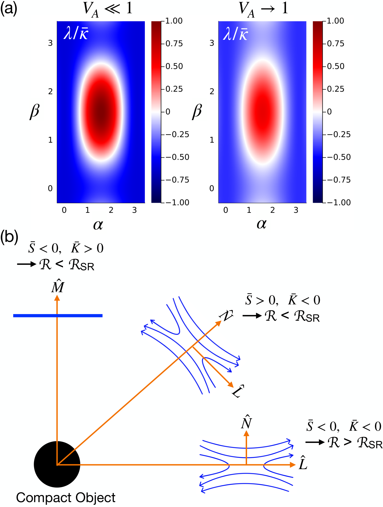
图注：（a）低磁化与高磁化极限下，按无量纲曲率尺度归一的重联率修正的热图。（b）示意三种重联取向及各自对重联率的影响。
怎么看这张图：先看同一曲率下颜色如何随入流、流出方向改变，再看三种示意取向。热图给的是特定静态球对称模型中的几何趋势。 直观显示潮汐修正对重联取向的依赖
来源与置信度：arXiv HTML；source verified；https://arxiv.org/html/2611.14740v1/lambda_visual.png
14. Enhancing Graviton--Photon Conversion through Galactic Magnetic Turbulence
- 来源：arXiv / astro-ph.HE
- 链接：https://arxiv.org/abs/2611.15218
- 作者：Hongliang Tian, Lei Wu, Yang Zhang, Bin Zhu
- 公告 / 来源日期：2026-11-13
- 阅读层级：相关简报
- 评分：novelty 8/10，importance 7/10，relevance 8/10，final 8.65/10
- 推荐理由：湍流相匹配提高引力子光子转换预言，背景上限仍依赖银河磁功率谱和相关长度。
中文题目：银河磁湍流的相位匹配可提高高频引力波向光子的转换概率
问题、方法与结论：作者计算银河电离等离子体中的引力子—光子混合。等离子体色散会让均匀磁场下的转换逐渐失相。湍流含许多空间波数，沿传播方向的波数若接近色散造成的失配，相关磁场分量可以补偿相位。用各向同性湍流模型投影磁功率后，长路径极限的平均概率在惯性区随路程近似线性增长。再用光子背景数据和背景光模型换算高频引力波特征应变界限。
意义与贡献：磁场湍流在这里决定可用的波数范围和转换频窗，不能只以平均场强描述。本文指出在哪些频率上，磁转换的估计最受湍流谱而非均匀场退相干控制。
可借鉴之处：可用已知电子密度和磁谱先计算失配波数，再用沿视线投影的湍流功率确定有效窗口。不同天区或湍流模型的比较能检验估计对几何的敏感性。
局限与关注点：提高最多约两个数量级是模型假设下相对以往银河转换限的结果。它依赖电子密度、各向同性湍流和背景强度口径，点式测量上限、已有上限与背景光模型曲线的置信含义也不同。
图 2
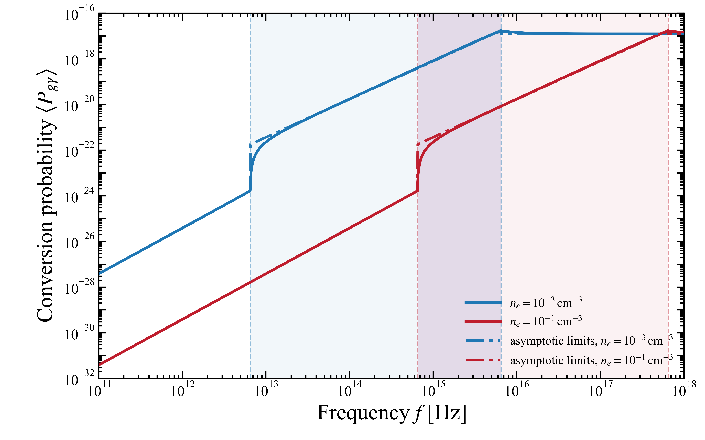
图注：两种电子密度下，$10^{11}$–$10^{18}$ Hz 的平均引力子—光子转换概率。实线为有限路程计算，点划线为长路程渐近式。浅色区为失配波数落在湍流惯性区的频段，虚竖线标出对应的区间边界。
怎么看这张图：对照两个密度的彩色区间如何平移，再比较同一频率处实线和渐近式。概率增强取决于可匹配的磁功率。 直接检验相位匹配窗口及长路径近似
来源与置信度：arXiv HTML；source verified；https://arxiv.org/html/2611.15218v1/gw_conversion_probability_comparison.png
15. Cosmic Ray Heating of the Early IGM: Realistic Galaxy Populations, Reduced Efficiency, and 21-cm Signatures
- 来源：arXiv / astro-ph.HE
- 链接：https://arxiv.org/abs/2611.15858
- 作者：Michael Pagano, Andrei Mesinger, Carmelo Evoli, Sruthi Ravikularaman
- 公告 / 来源日期：2026-11-13
- 阅读层级：相关简报
- 评分：novelty 8/10，importance 7/10，relevance 8/10，final 8.65/10
- 推荐理由：动量幂律和真实星系输入显著抑制早期宇宙线加热，量化21cm退化，相关贡献次于直接高能结果。
中文题目：第一代超新星的宇宙线加热可能比旧估计弱得多
问题、方法与结论：作者在 21cmFAST 中加入动量幂律注入谱、自由电子库仑损失及两类早期星系的形成历史，计算宇宙线质子对再电离前星系际介质的加热。基准算例约 99% 的热来自低于约 40 MeV 的注入质子，而动量幂律把较少能量分配到此段。相同注入效率下，红移 15 的加热比旧动能幂律约弱 12 倍。再采用受数据约束的星系历史，联合差异约为 28 倍。
意义与贡献：同样的总能量注入可以产生不同热演化。宇宙线谱的低能端和源星系出现时间决定它是否能与高质量 X 射线双星的加热相竞争。
可借鉴之处：比较两种加热方式时，可先匹配全天平均 21 cm 信号，再测空间功率谱的差别。这样可以区分加热源的空间聚集和整体加热阶段不同造成的效应。
局限与关注点：局域观测支持的注入效率下，匹配全球信号后功率差仅约 3%–6%。早期星系的逃逸效率、磁场和超新星种群仍不确定，论文中明显压平的吸收谷需要非常高的效率。
图 2
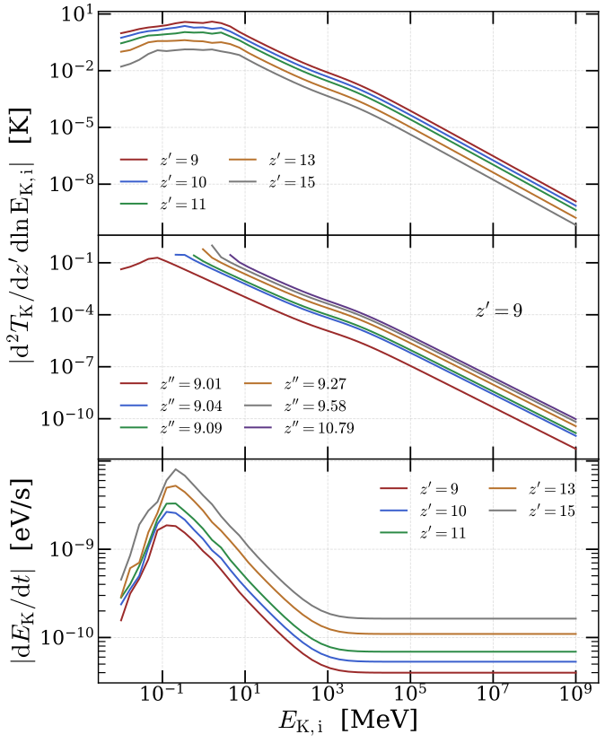
图注：乐观宇宙线加热算例。上图为不同红移下每对数初始动能区间的加热率。中图将红移 9 的加热按粒子发出的星系壳层分解，远处壳层需要更高的初始动能。下图为在到达能量评估的碰撞损失率，并对源壳层平均。
怎么看这张图：对照上图的有效供热区间和中图远壳层的低能截断。低能质子更易在传输中耗尽，其能量沉积具有空间选择性。 说明为何加热对低能注入谱和源距离敏感
来源与置信度：arXiv HTML；source verified；https://arxiv.org/html/2611.15858v1/cr_heating_3panel_Oct2026_focus9_fheat_total_per_bin.svg
说明
评分由 LLM 给出初评，再由本地阈值策略过滤；IACT、TeV 伽马射线和高能中微子天文学按重点方向处理。